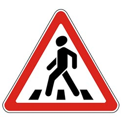
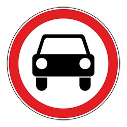

1. Общие положения
1.1. Правила дорожного движения(*) Кыргызской Республики (далее Правила) - комплексное выражение поведения на дорогах участников дорожного движения, выработанные на основе многолетней практики в наиболее характерных дорожных ситуациях.
Целью Правил является - установление единого порядка в использовании дорог наземным транспортом и другими участниками дорожного движения.
Основу Правил составляют право:
- на жизнь и здоровье человека;
- на сохранность комплекса дорог, транспортных средств и материальных ценностей;
- на обеспечение экологической безопасности государства;
- на осуществление контроля за соблюдением требований Правил участниками дорожного движения.
Настоящие Правила устанавливают единый порядок дорожного движения, взаимоотношения между его участниками и уполномоченными сотрудниками органов внутренних дел, осуществляющими специальные контрольные, надзорные и разрешительные функции в области обеспечения безопасности дорожного движения на всей территории Кыргызской Республики. Другие нормативные акты, касающиеся дорожного движения, должны основываться на требованиях настоящих Правил и не противоречить им, если иное не предусмотрено вступившими в установленном законом порядке в силу международными договорами, участницей которых является Кыргызская Республика.
1.2. В Правилах используются следующие основные понятия и термины:
"Автомагистраль" - дорога высокой пропускной способности, предназначенная для скоростного движения автотранспортных средств, имеющая для каждого направления не менее двух полос движения, отделенная друг от друга разделительной полосой (при ее отсутствии - дорожным ограждением), без пересечений в одном уровне с другими дорогами, железнодорожными или трамвайными путями, пешеходными или велосипедными дорожками, обозначенная знаком 5.1(**).
"Аварийная ситуация" - ситуация, возникающая в процессе дорожного движения, при которой действие или бездействие участников движения создает угрозу возникновения дорожно-транспортного происшествия.
"Автопоезд" - механическое транспортное средство, сцепленное с прицепом (прицепами).
"Безопасность дорожного движения" - состояние дорожного движения, отражающее степень защищенности его участников и государства от дорожно-транспортных происшествий и их последствий.
"Безопасная дистанция" - расстояние до транспортного средства, движущегося впереди по той же полосе, которое в случае его внезапного торможения или остановки позволит водителю транспортного средства, движущегося сзади, избежать столкновения без экстренного торможения.
"Безопасный интервал" - расстояние между боковыми частями движущихся транспортных средств либо между ними и другими объектами, при котором обеспечена безопасность дорожного движения.
"Безопасная скорость" - скорость, при которой водитель имеет возможность безопасно управлять транспортным средством и контролировать его движение в конкретных дорожных условиях.
"Буксировка" - перемещение одним транспортным средством другого транспортного средства, которое не относится к эксплуатации транспортных составов, на жесткой или гибкой сцепке либо способом частичной погрузки на платформу или специальное опорное приспособление.
"Велосипед" - транспортное средство, кроме инвалидных колясок, имеющее два колеса или более и приводимое в движение мускульной силой людей, находящихся на нем.
"Видимость" - максимальное расстояние, на котором с места водителя можно четко распознать границы элементов дороги и расположение участников движения, что позволяет водителю ориентироваться во время управления транспортным средством, в частности для выбора безопасной скорости и осуществления безопасного маневра.
"Водитель" - лицо, управляющее каким-либо транспортным средством, погонщик, ведущий по дороге вьючных, верховых животных или стадо. К водителю приравнивается обучающий вождению.
"Вынужденная остановка" - прекращение движения транспортного средства из-за его технической неисправности или опасности, создаваемой перевозимым грузом, состоянием водителя (пассажира) или появлением препятствия на дороге.
"Владелец транспортного средства" - организация, являющаяся юридическим лицом, на балансе которого состоит транспортное средство, или физическое лицо, обладающее правом собственности на транспортное средство.
"Главная дорога" - дорога, обозначенная знаками 2.1, 2.3.1-2.3.7 или 5.1, по отношению к пересекаемой (примыкающей) или дорога с твердым покрытием (асфальто- и цементобетон, каменные материалы и тому подобное) по отношению к грунтовой, либо любая дорога по отношению к выездам с прилегающих территорий. Наличие на второстепенной дороге непосредственно перед перекрестком участка с покрытием не делает ее равной по значению с пересекаемой.
"Гужевая повозка (сани)" - транспортное средство, приводимое в движение впряженными животными.
"Горные дороги" - дороги, отличающиеся от равнинных техническими характеристиками, влияющими на безопасность движения: значительная высота над уровнем моря, наличие более крутых уклонов, малых радиусов поворота, серпантин, малая протяженность горизонтальных участков, возможность завалов, размывов, камнепадов, схода снежных лавин, наличие обрывов, прилегающих к дороге, и др.; специфика быстрого изменения погодных условий (дождь, снег, сель, туман и т.д.).
"Грузовой автомобиль" - автомобиль, который по своей конструкции и оборудованию предназначен для перевозки грузов.
"Должностные лица" - лица, постоянно, временно или по специальному полномочию осуществляющие или наделенные в установленном законном порядке распорядительными полномочиями в отношении лиц, не находящихся от них служебной зависимости, а равно лица, выполняющие организационно-распорядительные или административно-хозяйственные функции в государственных органах.
"Дорога" - обустроенная или приспособленная и используемая для движения транспортных средств полоса земли либо поверхность искусственного сооружения. Дорога включает в себя одну или несколько проезжих частей, а также трамвайные пути, тротуары, обочины и разделительные полосы, при их наличии.
"Дорожно-транспортное происшествие" - событие, возникающее в процессе движения по дороге транспортного средства и с его участием, при котором погибли или ранены люди, повреждены транспортные средства, груз, сооружения либо причинен материальный ущерб.
"Дорожное движение" - совокупность общественных отношений, возникающих в процессе перемещения людей и грузов с помощью транспортных средств или без таковых в пределах дорог.
"Дорожная обстановка" - совокупность факторов, характеризующихся дорожными условиями, наличием препятствий на определенном участке дороги, интенсивностью и уровнем организации дорожного движения (наличие дорожной разметки, дорожных знаков, дорожного оборудования, светофоров и их состояние), которые должен учитывать водитель при выборе скорости, полосы движения и приемов управления транспортным средством.
"Дорожные условия" - совокупность факторов, характеризующих (с учетом времени года, периода суток, атмосферных явлений, освещенности дороги) видимость в направлении движения, состояние поверхности проезжей части (чистота, ровность, шероховатость, сцепление), а также ее ширину, величину уклонов на спусках и подъемах, виражей и закруглений, наличие тротуаров или обочин, средств организации дорожного движения и их состояние.
"Железнодорожный переезд" - пересечение дороги с железнодорожными путями на одном уровне.
"Жилая зона" - территория в населенном пункте, обозначенная знаками 5.21 и 5.22.
"Искусственные сооружения" - сооружения, устраиваемые при пересечении дорогами рек, оврагов, горных хребтов, дорог и других препятствий, снегозащитные, противообвальные. Основные искусственные сооружения на автомобильных дорогах: мосты, путепроводы, тоннели, эстакады, трубы, водоотводные устройства, галереи, подпорные стены и др.
"Край проезжей части" - определяется линией разметки, а при ее отсутствии - условной линией, проходящей по кромке дорожного покрытия, а также в месте примыкания проезжей части к трамвайным путям. При невозможности определить кромку дорожного покрытия, в том числе и по дорожным условиям, край проезжей части определяется самим водителем по краю накатанной полосы.
"Крайнее положение на проезжей части" - положение транспортного средства на расстоянии от края проезжей части к середине проезжей части или разделительной полосе, которое не дает возможности попутному транспортному средству (в том числе двухколесному) двигаться еще ближе к краю проезжей части, к середине проезжей части или разделительной полосе.
"Легковой автомобиль" - транспортное средство, разрешенная максимальная масса которого не превышает 3500 (три тысячи пятьсот) кг, число сидячих мест, в котором, помимо сиденья водителя, не превышает восьми, по своей конструкции и оборудованию предназначенное для перевозки пассажиров и их багажа с обеспечением необходимого комфорта и безопасности.
"Маневрирование" - начало движения, остановка, стоянка, поворот (разворот), перестроение, торможение и движение транспортного средства задним ходом.
"Маршрутное транспортное средство" - транспортное средство общего пользования (автобус, троллейбус, трамвай, маршрутное такси), предназначенное для перевозки по дорогам людей и движущееся по установленному маршруту с обозначенными остановочными пунктами (остановками).
"Мост" - сооружение, предназначенное для движения через реку, овраг и иные препятствия, границами которого являются начало и конец пролетных сооружений.
"Механическое транспортное средство" - транспортное средство, кроме мопеда, приводимое в движение двигателем. Термин распространяется также на любые тракторы и самоходные машины.
"Мопед" - двух- или трехколесное транспортное средство, приводимое в движение двигателем с рабочим объемом не более 50 куб.см и имеющее максимальную конструктивную скорость не более 50 км/ч. К мопедам приравниваются велосипеды с подвесным двигателем, мокики и другие транспортные средства с аналогичными характеристиками.
"Мотоцикл" - двухколесное механическое транспортное средство с боковым прицепом или без него. К мотоциклам приравниваются трех- и четырехколесные механические транспортные средства, имеющие массу в снаряженном состоянии не более 400 кг.
"Населенный пункт" - застроенная территория, въезды на которую и выезды с которой обозначены знаками 5.23.1, 5.23.2, 5.24.1, 5.24.2, 5.25, 5.26.
"Недостаточная видимость" - видимость дороги менее 300 м в условиях тумана, дождя, снегопада и тому подобное, а также в сумерки.
"Организованная пешая колонна" - обозначенная в соответствии с пунктом 4.2 Правил группа людей, совместно движущихся по дороге в одном направлении.
"Остановка" - преднамеренное прекращение движения транспортного средства на время до 5 минут, а также на большее, если это необходимо для посадки или высадки пассажиров либо загрузки или разгрузки транспортного средства.
"Обвал" - внезапное обрушение с крутых горных склонов каменных глыб, камней, щебня и крупнообломочных скальных грунтов.
"Обгон" - опережение одного или нескольких движущихся транспортных средств по дороге другим транспортным средством, связанное с выездом из занимаемой полосы, в том числе с выездом на встречную полосу.
"Обочина" - элемент дороги, примыкающий непосредственно к проезжей части на одном уровне с ней, отличающийся типом покрытия или выделенный с помощью разметки 1.2.1. Обочина может использоваться для остановки и стоянки транспортных средств, движения пешеходов, мопедов, велосипедов (при отсутствии тротуаров, пешеходных, велосипедных дорожек или при невозможности передвигаться по ним), гужевых повозок (саней).
"Ограниченная обзорность" - видимость дороги в направлении движения, ограниченная геометрическими параметрами дороги, придорожными инженерными сооружениями, насаждениями и прочими объектами, а также транспортными средствами.
"Опасный груз" - вещества, изделия из них, отходы производственной и иной хозяйственной деятельности, которые в силу присущих им свойств могут при перевозке создать угрозу для жизни и здоровья людей, нанести вред окружающей природной среде, повредить или уничтожить материальные ценности.
"Опасность для движения" - ситуация, возникшая в процессе дорожного движения, при которой продолжение движения в том же направлении и с той же скоростью создает угрозу возникновения дорожно-транспортного происшествия.
"Опережение" - движение транспортного средства со скоростью, превышающей скорость попутных транспортных средств, движущихся рядом по смежным полосам.
"Организация дорожного движения" - комплекс организационно-технических мероприятий и распорядительных действий по управлению движением на дорогах.
"Организованная транспортная колонна" - группа из трех и более механических транспортных средств, следующих непосредственно друг за другом по одной и той же полосе с постоянно включенными фарами в сопровождении головного транспортного средства, имеющего специальную цветографическую окраску с включенным проблесковым маячком синего цвета или сочетанием маячков синего и красного цветов.
"Ослепление" - физиологическое состояние водителя вследствие воздействия света на его зрение, когда водитель объективно не имеет возможности обнаруживать препятствие или распознать границы элементов дороги на минимальном расстоянии.
"Перекресток" - место пересечения, примыкания или разветвления дорог на одном уровне, ограниченное воображаемыми линиями, соединяющими соответственно противоположные, наиболее удаленные от центра перекрестка начала закруглений проезжих частей. Не считаются перекрестками выезды с прилегающих территорий.
"Пешеход" - лицо, находящееся вне транспортного средства на дороге и не производящее на ней работу. К пешеходам приравниваются лица, передвигающиеся в инвалидных колясках без двигателя, ведущие велосипед, мопед, мотоцикл, везущие санки, тележку, детскую или инвалидную коляску.
"Пешеходный переход" - участок проезжей части, обозначенный знаками 5.19.1, 5.19.2 и (или) разметкой 1.14.1, 1.14.2 и выделенный для движения пешеходов через дорогу. При отсутствии разметки ширина пешеходного перехода определяется расстоянием между знаками 5.19.1 и 5.19.2.
"Полоса движения" - любая из продольных полос проезжей части, обозначенная или не обозначенная разметкой и имеющая ширину, достаточную для движения автомобилей в один ряд.
"Преимущество (приоритет)" - право на первоочередное движение в намеченном направлении по отношению к другим участникам движения.
"Прилегающая территория" - территория, непосредственно прилегающая к дороге и не предназначенная для сквозного движения транспортных средств (дворы, жилые массивы, автостоянки, АЗС, предприятия и тому подобное).
"Прицеп" - транспортное средство, не оборудованное двигателем и предназначенное для движения в составе с механическим транспортным средством. Термин распространяется также на полуприцепы и прицепы-роспуски.
"Проезжая часть" - элемент дороги, предназначенный для движения безрельсовых транспортных средств.
"Пассажир" - лицо, кроме водителя, находящееся в транспортном средстве (на нем), а также лицо, которое входит в транспортное средство (садится на него) или выходит из транспортного средства (сходит с него).
"Пересечение дорог" - узел автомобильных дорог, в котором сходящиеся дороги не прерываются и возможно сквозное движение по каждой из них.
"Перестроение" - выезд из занимаемой полосы или занимаемого ряда с сохранением первоначального направления движения.
"Подушка безопасности надувная" - устройство для удержания водителя и пассажиров автомобиля на своих местах при дорожно-транспортных происшествиях, состоящее из специальной оболочки, быстро наполняемой газом из баллона или генератора газа при резком торможении движения.
"Препятствие для движения" - любой материальный объект, затрудняющий или делающий невозможным дальнейшее движение по данной полосе проезжей части или по всей ширине дороги.
"Противоаварийный съезд" - тупиковый участок, примыкающий к дороге, располагаемый в пределах или в конце спуска, предназначенный для принудительной остановки транспортного средства в случае отказа его тормозных устройств путем увеличения сопротивления движению (подъем) в сочетании с засыпкой поверхности съезда рыхлым материалом (песок, гравий).
"Путепровод" - инженерное сооружение мостового типа над другой дорогой (железной дорогой) в месте их пересечения, обеспечивающее движение по нему на разных уровнях и дающее возможность съезда на другую дорогу.
"Разделительная полоса" - конструктивно выделенный элемент дороги, разделяющий смежные проезжие части и не предназначенный для движения или остановки безрельсовых транспортных средств и пешеходов.
"Разрешенная максимальная масса" - масса снаряженного транспортного средства с грузом, водителем и пассажирами, установленная предприятием-изготовителем в качестве максимально допустимой. За разрешенную максимальную массу состава транспортных средств, то есть сцепленных и движущихся как одно целое, принимается сумма разрешенных максимальных масс транспортных средств, входящих в состав.
"Регулировщик" - сотрудник органов внутренних дел, военной автоинспекции, работник дорожно-эксплуатационной службы, дежурный на железнодорожном переезде, паромной переправе, дружинник, внештатный сотрудник органов внутренних дел, имеющие соответствующие удостоверения и экипировку (форменную одежду или отличительный знак - нарукавную повязку, жезл, диск с красным сигналом либо световозвращателем, красный фонарь или флажок).
"Рельсовое транспортное средство" - трамвай и платформы со специальным оборудованием, движущиеся по трамвайным путям. Все прочие транспортные средства, участвующие в дорожном движении, считаются нерельсовыми.
"Ремень безопасности" - эластичная лента, предназначенная для удержания водителя и пассажиров на своих местах внутри транспортного средства при дорожно-транспортных происшествиях.
"Стоянка" - преднамеренное прекращение движения транспортного средства на время более 5 минут по причинам, не связанным с посадкой или высадкой пассажиров либо загрузкой или разгрузкой транспортного средства.
"Световозвращатель" - отражатель световых лучей, особенность которого состоит в отражении падающих от него лучей света в обратном направлении.
"Светофор" - светосигнальное устройство, предназначенное для регулирования дорожного движения.
"Транспортное средство" - устройство, предназначенное для перевозки людей и (или) груза.
"Такси" - транспортные средства с опознавательным знаком "Такси", принадлежащие физическим и юридическим лицам, оказывающим в соответствии с законодательством Кыргызской Республики услуги по перевозке пассажиров и грузов. Опознавательный знак "Такси" имеет вид трапеции с заглавной буквой "Т" и шашечками с подсветкой изнутри, установленный жестко или на магните на крыше автомобиля.
"Темное время суток" - промежуток времени от конца вечерних сумерек до начала утренних сумерек.
"Тоннель" - подземное инженерное сооружение, предназначенное для пропуска транспортных средств, водовода и т.п., проходящее через толщу земли, горный массив или под водным препятствием.
"Тормозной путь" - расстояние, которое проходит транспортное средство во время экстренного торможения с начала воздействия на орган управления тормозной системой (педаль, рукоятку) до полной его остановки.
"Тротуар" - элемент дороги, предназначенный для движения пешеходов и примыкающий к проезжей части или отделенный от нее газоном.
"Уступить дорогу (не создавать помех)" - требование, означающее, что участник дорожного движения не должен начинать, возобновлять или продолжать движение, осуществлять какой-либо маневр, если это может вынудить других участников движения, имеющих по отношению к нему преимущество, изменить направление движения или скорость.
"Участник дорожного движения" - лицо, принимающее непосредственное участие в процессе движения в качестве водителя, пешехода, пассажира транспортного средства; погонщик животных.
"Улица" - автомобильная городская дорога в пределах населенного пункта.
"Утомление водителя" - физиологическое состояние организма, выражающееся в снижении внимания, расстройстве координации движений, сонливости, наступающих в результате его деятельности за время управления транспортным средством.
"Экологическая безопасность транспортного средства" - это свойства транспортного средства снижать степень отрицательного влияния на окружающую среду.
"Эстакада" - инженерное сооружение, предназначенное для движения транспортных средств и (или) пешеходов, при прохождении одной дороги на другой в месте их пересечения, а также для создания дороги выше уровня земли с целью обхода занятых земель или транспортных потоков.
1.3. Участники дорожного движения обязаны знать и соблюдать относящиеся к ним требования Правил, сигналов светофоров, знаков и разметки, а также выполнять распоряжения регулировщиков, действующих в пределах предоставленных им прав и регулирующих дорожное движение установленными сигналами.
1.4. На дорогах установлено правостороннее движение транспортных средств.
1.5. Участники дорожного движения должны действовать таким образом, чтобы не создавать опасности для движения и не причинять вреда.
Запрещается повреждать и загрязнять покрытие дорог, снимать, загораживать, самовольно устанавливать дорожные знаки, светофоры и другие технические средства организации движения, оставлять и выбрасывать на дорогу любые предметы (мусор), создающие помехи для движения. Лицо, создавшее помеху, обязано принять все возможные меры для ее устранения, а если это невозможно, то доступными средствами обеспечить информирование участников движения об опасности и сообщить в милицию.
1.6. Лица, нарушившие Правила, несут ответственность в соответствии с действующим законодательством.
2. Общие обязанности водителей
2.1. Водитель механического транспортного средства обязан:
2.1.1. Останавливать транспортное средство и по требованию сотрудников уполномоченного органа в сфере внутренних дел по обеспечению безопасности дорожного движения передавать им для проверки:
- водительское удостоверение;
- регистрационные документы на транспортное средство;
- путевой лист и документы на перевозимый груз в установленных законом случаях;
- аккредитационную карточку, выдаваемую уполномоченным государственным органом в сфере иностранных дел, в случае нарушения правил дорожного движения сотрудниками дипломатических представительств, консульских учреждений иностранных государств, а также представительств международных организаций и иных приравненных к ним представительств, аккредитованных в Кыргызской Республике.
В случаях, прямо предусмотренных действующим законодательством, иметь и передавать для проверки работникам уполномоченного государственного органа в сфере регулирования и контроля деятельности на автомобильном транспорте лицензию и документы, предусмотренные правилами перевозок пассажиров и грузов.
2.1.2. При движении на транспортном средстве, оборудованном ремнями безопасности, быть пристегнутым и не перевозить пассажиров, не пристегнутых ремнями (допускается не пристегиваться ремнями детям до 12 лет в соответствии с пунктом 22.8 Правил, обучающему вождению - когда транспортным средством управляет обучаемый, а в населенных пунктах, кроме того, водителям и пассажирам автомобилей оперативных служб).
Перечень оперативных и специальных служб устанавливается Правительством Кыргызской Республики
При управлении мотоциклом быть в застегнутом мотошлеме и не перевозить пассажиров без застегнутого мотошлема.
2.2. Водитель механического транспортного средства, участвующий в международном дорожном движении, обязан:
- иметь при себе регистрационные документы на транспортное средство и водительское удостоверение, соответствующие Конвенции о дорожном движении;
- иметь на транспортном средстве регистрационный и отличительный знаки государства, в котором оно зарегистрировано.
2.3. Водитель транспортного средства обязан:
2.3.1. Перед выездом проверить и в пути обеспечить исправное техническое состояние транспортного средства в соответствии с Основными положениями по допуску транспортных средств к эксплуатации и обязанностям должностных лиц по обеспечению безопасности дорожного движения.
В дальнейшем - Основные положения
2.3.2. Прекратить дальнейшее движение с недействующей рабочей тормозной системой, недействующим рулевым управлением, неисправным сцепным устройством (в составе поезда), не освещающих (отсутствующих) фарах и задних габаритных огнях на дорогах без искусственного освещения в темное время суток или в условиях недостаточной видимости, недействующим со стороны водителя стеклоочистителем во время дождя или снегопада.
Недействующими считаются системы, которые не позволяют водителю остановить транспортное средство или осуществить маневр при движении даже с минимальной скоростью
При возникновении в пути прочих неисправностей, с которыми приложением 1 к Основным положениям запрещена эксплуатация транспортных средств, водитель должен устранить их, а если это невозможно, то он может следовать к месту стоянки или ремонта с соблюдением необходимых мер предосторожности.
2.3.3. Проходить по требованию сотрудников органов внутренних дел освидетельствование на степень опьянения. В установленных случаях проходить проверку знаний Правил и навыков вождения, а также медицинское освидетельствование для подтверждения способности к управлению транспортными средствами.
2.3.4. Предоставлять транспортное средство:
- сотрудникам органов внутренних дел для транспортировки поврежденных при авариях транспортных средств, проезда к месту стихийного бедствия, а также сотрудникам органов внутренних дел, органов национальной безопасности, налоговой полиции в иных не терпящих отлагательства случаях, предусмотренных действующим законодательством;
- медицинским работникам, следующим в попутном направлении для оказания медицинской помощи, а также медицинским работникам, сотрудникам органов внутренних дел, органов национальной безопасности, дружинникам и внештатным сотрудникам органов внутренних дел для транспортировки граждан, нуждающихся в срочной медицинской помощи, в лечебные учреждения.
Примечания:
1. Требование об остановке транспортного средства изложены в п.6.11 ПДД.
2. Требования о предоставлении транспортного средства сотрудникам органов национальной безопасности и налоговой полиции не распространяется на транспортные средства, принадлежащие гражданам.
3. Лица, воспользовавшиеся транспортным средством должны по требованию водителя выдать справку или сделать запись в путевом листе (с указанием продолжительности поездки, пройденного расстояния, своей фамилии, должности, номера служебного удостоверения, наименования своей организации), а медицинские работники - выдать талон установленного образца.
4. Расходы, связанные с предоставлением транспортного средства сотрудникам органов государственной безопасности и налоговой полиции, по требованию владельца транспортного средства возмещаются этими органами в установленном порядке.
2.4. Лица, обладающие правом проверять у водителя транспортного средства документы или использовать транспортное средство, обязаны предъявить по требованию водителя служебное удостоверение.
2.5. Водители-инвалиды, управляющие автомобилями, которые обозначены опознавательным знаком "Инвалид" в соответствии с "Основными положениями" п.8 "Инвалид" и мотоколясками, могут отступать от требований знаков 3.2; 3.3; 3.28, останавливаться в зоне действия знака 3.27 разрешается при наличии таблички 8.18.
2.6. При дорожно-транспортном происшествии водитель, причастный к нему, обязан:
- немедленно остановить (не трогать с места) транспортное средство, включить аварийную световую сигнализацию и выставить знак аварийной остановки (мигающий красный фонарь) в соответствии с требованиями пункта 7.2 Правил, не перемещать предметы, имеющие отношение к происшествию;
- принять возможные меры для оказания доврачебной медицинской помощи пострадавшим. Вызвать "Скорую медицинскую помощь", а в экстренных случаях отправить пострадавших на попутном, а если это невозможно, доставить на своем транспортном средстве в ближайшее лечебное учреждение, сообщить свою фамилию, регистрационный знак транспортного средства (с предъявлением документа, удостоверяющего личность или водительского удостоверения и регистрационного документа на транспортное средство) и возвратиться к месту происшествия;
- освободить проезжую часть, если движение других транспортных средств невозможно. При необходимости освобождения проезжей части или доставки пострадавших на своем транспортном средстве в лечебное учреждение предварительно зафиксировать в присутствии свидетелей положение транспортного средства, следы и предметы, относящиеся к происшествию, и принять все возможные меры к их сохранению и организации объезда места происшествия;
- сообщить о случившемся в органы внутренних дел, записать фамилии и адреса очевидцев и ожидать прибытия сотрудников органов внутренних дел;
2.7. Если в результате дорожно-транспортного происшествия нет пострадавших, водители при взаимном согласии в оценке обстоятельств случившегося могут, предварительно составив схему происшествия и подписав ее, прибыть на ближайший пост подразделения по обеспечению безопасности дорожного движения уполномоченного органа в сфере внутренних дел или в орган милиции для оформления происшествия, а при незначительном материальном ущербе водители могут принять решение о возмещении причиненного ущерба по взаимному согласию.
2.8. Водителю запрещается:
- управлять транспортным средством в состоянии опьянения (алкогольного, наркотического или иного), под воздействием лекарственных препаратов, ухудшающих реакцию и внимание, в болезненном или утомленном состоянии, ставящим под угрозу безопасность движения;
- передавать управление транспортным средством лицам, находящимся в состоянии опьянения под воздействием лекарственных препаратов, в болезненном или утомленном состоянии, а также лицам, не имеющим при себе водительского удостоверения на право управления транспортным средством данной категории;
- пересекать движение организованных (в том числе и пешие) колонн и занимать место в них;
- перевозить пассажиров в кабине автобусов, троллейбусов, трамваев;
- двигаться в неорганизованной колонне с включенными аварийной световой сигнализацией, внешними световыми приборами, а также не предусмотренными настоящими Правилами дополнительными световыми сигналами, звуковым сигналом без сопровождения специальными автомобилями подразделений уполномоченного государственного органа в сфере обеспечения безопасности дорожного движения;
- употреблять алкогольные напитки, наркотические или психотропные вещества после дорожно-транспортного происшествия, к которому он причастен, либо после того, как транспортное средство было остановлено по требованию сотрудника милиции, до проведения освидетельствования с целью установления состояния опьянения или до принятия решения об освобождении от проведения такого освидетельствования;
- управлять транспортным средством с нарушением режима труда и отдыха, установленного уполномоченным государственным органом в сфере транспорта и дорог, согласованного с уполномоченным государственным органом в сфере труда и социального развития, а при осуществлении международных автомобильных перевозок - вступившими в установленном законом порядке в силу международными договорами, участницей которых является Кыргызская Республика;
- пользоваться во время движения телефоном, не оборудованным техническим устройством, позволяющим вести переговоры без использования рук;
- в стоящем транспортном средстве оставлять открытыми двери со стороны проезжей части дороги;
- эксплуатировать транспортное средство лицом, не имеющим при себе страхового полиса по обязательному страхованию гражданской ответственности перевозчика опасных грузов или гражданской ответственности перевозчика перед пассажирами, при осуществлении перевозки пассажиров за оплату или по найму, а при осуществлении международных автомобильных перевозок - вступившими в установленном законом порядке в силу международными договорами, участницей которых является Кыргызская Республика;
- умышленно и демонстративно нарушать общественный порядок, устраивать и участвовать в несогласованных в установленном порядке соревнованиях с участием транспортных средств (автомобили, мотоциклы, показательная езда разного вида в неустановленном месте и т.п.), ездить, создавая опасность для движения, а также движение транспортных средств в свадебной колонне свыше пяти транспортных средств.
Примечание. Разрешается движение в колонне более пяти транспортных средств в составе правительственного кортежа или делегации; колонне в сопровождении автомашины уполномоченного государственного органа по обеспечению безопасности дорожного движения; похоронной процессии; колонне с разрешения уполномоченного государственного органа по обеспечению безопасности дорожного движения.
3. Применение специальных сигналов
3.1. Водители транспортных средств оперативных и специальных служб с включенным проблесковым маячком синего цвета, выполняя неотложное служебное задание, могут отступать от требований разделов 6 (кроме сигналов регулировщика), 8-18 Правил, приложений 1 и 2 к Правилам при условии обеспечения безопасности движения.
 Несмотря на сигнал светофора, разрешающий движение только направо, водитель автомобиля с включенным проблесковым маячком синего цвета может продолжить движение в любом направлении
Несмотря на сигнал светофора, разрешающий движение только направо, водитель автомобиля с включенным проблесковым маячком синего цвета может продолжить движение в любом направлении
3.2. Дополнительно к проблесковому маячку синего цвета может быть включен маячок красного цвета.
Для получения преимущества перед другими участниками движения водители таких транспортных средств должны включить проблесковый маячок синего цвета и специальный звуковой сигнал. Воспользоваться приоритетом они могут только убедившись, что им уступают дорогу.
Этим же правом пользуются водители транспортных средств, сопровождаемых транспортными средствами оперативных и специальных служб в случаях, установленных настоящим пунктом Правил.
3.3. При приближении транспортных средств с включенными проблесковым маячком синего и (или) красного цвета и специальным звуковым сигналом водители обязаны уступить дорогу для обеспечения беспрепятственного проезда этих и сопровождаемых ими других транспортных средств, на которых должен быть включен ближний свет фар, а в случае необходимости остановится. Возобновлять движение разрешается только после проезда замыкающего колону транспортного средства с включенными проблесковыми маячками синего и (или) зеленого цвета.
Запрещается выполнять обгон транспортного средства, движущегося с включенными проблесковыми маячками синего и красного цветов и специальным звуковым сигналом, а также сопровождаемого им транспортного средства (сопровождаемых транспортных средств).
 Водитель легкового автомобиля обязан перестроиться на правую полосу, чтобы уступить дорогу следующему за ним автомобилю с включенными проблесковыми маячками и звуковым сигналом
Водитель легкового автомобиля обязан перестроиться на правую полосу, чтобы уступить дорогу следующему за ним автомобилю с включенными проблесковыми маячками и звуковым сигналом
 Маячок на автомобиле «Скорая медицинская помощь» не включен. Следовательно, вы не обязаны уступать ему дорогу, так как находитесь на главной дороге
Маячок на автомобиле «Скорая медицинская помощь» не включен. Следовательно, вы не обязаны уступать ему дорогу, так как находитесь на главной дороге
 Вам необходимо уступить дорогу приближающемуся автомобилю с включенным проблесковым маячком синего цвета и специальным звуковым сигналом, несмотря на то, что вы для него — помеха справа
Вам необходимо уступить дорогу приближающемуся автомобилю с включенным проблесковым маячком синего цвета и специальным звуковым сигналом, несмотря на то, что вы для него — помеха справа
3.4. Приближаясь к стоящему транспортному средству с включенным проблесковым маячком синего цвета, водитель должен снизить скорость, чтобы иметь возможность немедленно остановиться в случае необходимости.
 Перед стоящим транспортным средством с включенным маячком необходимо снизить скорость, чтобы, в случае необходимости, остановиться
Перед стоящим транспортным средством с включенным маячком необходимо снизить скорость, чтобы, в случае необходимости, остановиться
3.5. Водители транспортных средств с включенным проблесковым маячком оранжевого или желтого цвета при выполнении строительных, ремонтных или уборочных работ на дороге могут отступать от требований дорожных знаков и разметки, а также пунктов 9.4-9.8 и 16.1 Правил при условии обеспечения безопасности движения. Другие водители не должны препятствовать их работе.
Указанные проблесковые маячки также могут использоваться на
транспортных средствах, перевозящих или сопровождающих тяжеловесные грузы, взрывчатые, легковоспламеняющиеся, радиоактивные и ядовитые вещества с высокой степенью опасности, с разрешения уполномоченного подразделения органов внутренних дел Кыргызской Республики.
Проблесковый маячок оранжевого или желтого цвета не дает преимущества в движении и служит для предупреждения других участников движения об опасности.
 Транспортное средство с включенным проблесковым маячком желтого цвета подчиняется общим правилам и поэтому обязано уступить дорогу вашему автомобилю, движущемуся по главной дороге прямо, а затем повернуть налево
Транспортное средство с включенным проблесковым маячком желтого цвета подчиняется общим правилам и поэтому обязано уступить дорогу вашему автомобилю, движущемуся по главной дороге прямо, а затем повернуть налево
 При движении по автомагистрали водителю легкового автомобиля запрещено въезжать в технологические разрывы разделительной полосы, а водителю грузовика со включенным проблесковым маячком желтого цвета — разрешено
При движении по автомагистрали водителю легкового автомобиля запрещено въезжать в технологические разрывы разделительной полосы, а водителю грузовика со включенным проблесковым маячком желтого цвета — разрешено
4. Права и обязанности пешеходов
4.1. Пешеходы должны двигаться по тротуарам или пешеходным дорожкам, а при их отсутствии - по обочинам. Пешеходы, перевозящие или переносящие громоздкие предметы, а также лица, передвигающиеся в инвалидных колясках без двигателя, могут двигаться по краю проезжей части, если их движение по тротуарам или обочинам создает помехи для других пешеходов.
При отсутствии тротуаров, пешеходных дорожек или обочин, а также в случае невозможности двигаться по ним, пешеходы могут двигаться по велосипедной дорожке или идти в один ряд по краю проезжей части (на дорогах с разделительной полосой - по внешнему краю проезжей части).
Вне населенных пунктов при движении по проезжей части пешеходы должны идти навстречу движению транспортных средств. Лица, передвигающиеся в инвалидных колясках без двигателя, ведущие мотоцикл, мопед, велосипед, в этих случаях должны следовать по ходу движения транспортных средств.
 При отсутствии обочины пешеход может двигаться по краю проезжей части навстречу потоку транспорта
При отсутствии обочины пешеход может двигаться по краю проезжей части навстречу потоку транспорта
4.2. Движение организованных пеших колонн по проезжей части разрешается только по направлению движения транспортных средств по правой стороне не более, чем по четыре человека в ряд. Спереди и сзади колонны с левой стороны должны находиться сопровождающие с красными флажками, а в темное время суток и в условиях недостаточной видимости - с включенными фонарями: спереди - белого цвета, сзади - красного.
Группы детей разрешается водить только по тротуарам и пешеходным дорожкам, а при их отсутствии - и по обочинам, но лишь в светлое время суток и только в сопровождении взрослых.
4.3. Пешеходы должны пересекать проезжую часть по пешеходным переходам, в том числе по подземным и надземным, а при их отсутствии - на перекрестках по линии тротуаров или обочин.
При отсутствии в зоне видимости перехода или перекрестка разрешается переходить дорогу под прямым углом к краю проезжей части на участках без разделительной полосы и ограждений там, где она хорошо просматривается в обе стороны.
4.4. В местах, где движение регулируется, пешеходы должны руководствоваться сигналами регулировщика или пешеходного светофора, а при его отсутствии транспортного светофора.
 Если пешеходный переход регулируемый, пешеход обязан руководствоваться сигналами пешеходного светофора (при отсутствии регулировщика)
Если пешеходный переход регулируемый, пешеход обязан руководствоваться сигналами пешеходного светофора (при отсутствии регулировщика)
4.5. На нерегулируемых пешеходных переходах пешеходы могут выходить на проезжую часть после того, как оценят расстояние до приближающихся транспортных средств, их скорость и убедятся, что переход будет для них безопасен. При пересечении проезжей части вне пешеходного перехода пешеходы, кроме того, не должны создавать помех для движения транспортных средств и выходить из-за стоящего транспортного средства или иного препятствия, ограничивающего обзорность, не убедившись в отсутствии приближающихся транспортных средств.
4.6. Выйдя на проезжую часть, пешеходы не должны задерживаться или останавливаться, если это не связано с обеспечением безопасности движения. Пешеходы, не успевшие закончить переход, должны остановиться на линии, разделяющей транспортные потоки противоположных направлений. Продолжать переход можно лишь убедившись в безопасности дальнейшего движения с учетом сигнала светофора (регулировщика).
4.7. При приближении транспортных средств с включенными синим и (или) красным проблесковым маячком и специальным звуковым сигналом пешеходы обязаны воздержаться от перехода проезжей части, а находящиеся на ней должны уступить дорогу этим транспортным средствам и незамедлительно освободить проезжую часть.
4.8. Ожидать маршрутное транспортное средство и такси разрешается только на приподнятых над проезжей частью посадочных площадках, а при их отсутствии - на тротуаре или обочине. На остановочных пунктах, не оборудованных приподнятыми посадочными площадками, разрешается выходить на проезжую часть для посадки в транспортное средство лишь после его остановки. После высадки необходимо, не задерживаясь, освободить проезжую часть.
При движении через проезжую часть к остановочному пункту или от него пешеходы должны руководствоваться требованиями пунктов 4.4-4.7 Правил.
4.9. Пешеход имеет право:
- на жизнь и здоровье;
- на пользование дорогой и транспортным средством;
- на получение информации о состоянии дорог;
- на получение срочной медицинской помощи;
- на выяснение правомерности его задержания уполномоченными сотрудниками органов внутренних дел.
5. Обязанности пассажиров
5.1. Ожидать автобус, троллейбус, трамвай, такси разрешается только на посадочных площадках, а при их отсутствии тротуаре или обочине.
5.2. Посадку и высадку производить со стороны тротуара или обочины и только после полной остановки транспортного средства.
Если посадка и высадка невозможна со стороны тротуара или обочины, она может осуществляться со стороны проезжей части при условии, что это будет безопасно и не создаст помех другим участникам движения.
5.3. Пассажирам запрещается:
- отвлекать водителя от управления транспортным средством во время его движения;
- при поездке на грузовом автомобиле с бортовой платформой стоять, сидеть на бортах или на грузе выше бортов;
- открывать двери транспортного средства во время его движения;
- выходить из автомобиля вместе с водителем при остановке транспортного средства регулировщиками или сотрудниками органов внутренних дел в темное время суток, с целью оспаривания исключительно возможных неправомерных действий сотрудника. При этом пассажиры не должны препятствовать сотруднику милиции исполнять свои функциональные обязанности;
- находиться в движущемся автомобиле, не пристегнувшись предусмотренными заводом-изготовителем ремнями безопасности;
- находиться на мототранспортном средстве с не пристегнутым мотошлемом или без него;
- находясь в транспортном средстве, умышленно и демонстративно нарушать общественный порядок и спокойствие граждан, выражая явное неуважение к обществу и другим участникам движения.
6. Сигналы светофора или регулировщика
6.1. В светофорах применяются световые сигналы зеленого, желтого, красного и бело-лунного цвета.
В зависимости от назначения сигнала светофора могут быть круглые, в виде стрелки (стрелок), силуэта пешехода или велосипеда и Х - образные.
Светофоры с круглыми сигналами могут иметь одну или две дополнительные секции с сигналами в виде зеленой стрелки (стрелок), которые располагаются на уровне зеленого круглого сигнала.
6.2. Круглые сигналы светофора имеют следующие значения:
- зеленый сигнал разрешает движение;
- зеленый мигающий сигнал разрешает движение и информирует, что время его действия истекает и вскоре будет включен запрещающий сигнал (для информирования водителей о времени в секундах, оставшемся до конца горения зеленого сигнала, могут применяться цифровые табло);
- желтый сигнал запрещает движение. Кроме случаев, предусмотренных пунктом 6.14 Правил, и предупреждает о предстоящей смене сигналов;
- желтый мигающий сигнал разрешает движение и информирует о наличии нерегулируемого перекрестка или пешеходного перехода, предупреждает об опасности;
- красный сигнал в том числе мигающий, запрещает движение;
- сочетание красного и желтого сигналов запрещает движение и информирует о предстоящем включении зеленого сигнала.
6.3. Сигналы светофора, выполненные в виде стрелок красного, желтого и зеленого цветов(*) , имеют то же значение, что и круглые сигналы соответствующего цвета, но их действие распространяется только на направления (направление), указываемое стрелками. При этом стрелка, разрешающая поворот налево, разрешает и разворот, если это не запрещено соответствующим дорожным знаком.
Такое же значение имеет зеленая стрелка в дополнительной секции. Выключенный сигнал в дополнительной секции означает запрещение движения в направлении, регулируемом этой секцией.
 Сигналы светофора в виде стрелок указывают на направление движения: легковой автомобиль — только поворот налево и (или) разворот; грузовой автомобиль — только прямо; автобус — движение запрещено
Сигналы светофора в виде стрелок указывают на направление движения: легковой автомобиль — только поворот налево и (или) разворот; грузовой автомобиль — только прямо; автобус — движение запрещено
 В соответствии с предписанием знака «Направление движения по полосам» и указанием сигналов светофора в данной ситуации вы можете выполнить поворот налево или разворот
В соответствии с предписанием знака «Направление движения по полосам» и указанием сигналов светофора в данной ситуации вы можете выполнить поворот налево или разворот
6.4. Если на основной зеленый сигнал светофора нанесена черная контурная стрелка (стрелки), то она информирует водителей о наличии дополнительной секции светофора и указывает иные разрешенные направления движения, чем сигнал дополнительной секции.
 В данной ситуации разрешает движение прямо и налево.
В данной ситуации разрешает движение прямо и налево.
Обоим горит стрелка в допсекции. Кто должен уступить?
6.5. Если сигнал светофора выполнен в виде силуэта пешехода (велосипеда), то его действие распространяется только на пешеходов (велосипедистов).
Для регулирования движения велосипедистов может использоваться также светофор с круглыми сигналами уменьшенного размера, дополненный прямоугольной табличкой белого цвета размером 200х200 мм с изображением велосипеда черного цвета.
6.6. Для информации слепых пешеходов о возможности пересечения проезжей части световые сигналы светофора могут быть дополнены звуковым сигналом.
6.7. Для регулирования движения транспортных средств по полосам проезжей части, в частности по тем, направление движения по которым может изменяться на противоположное, применяются реверсивные светофоры с красным Х-образным сигналом и зеленым сигналом в виде стрелы, направленной вниз. Эти сигналы соответственно запрещают или разрешают движение по полосе, над которой они расположены.
Основные сигналы реверсивного светофора могут быть дополнены желтым сигналом в виде стрелы, наклоненной по диагонали вниз направо или налево, включение которой информирует о предстоящей смене сигнала и необходимости перестроиться на полосу, на которую указывает стрела.
При включенных сигналах реверсивного светофора, который расположен над полосой, обозначенной с обеих сторон разметкой 1.9, въезд на эту полосу запрещен.
 Сигналы реверсивного светофора: движение по реверсивной полосе запрещено, движение по реверсивной полосе разрешено
Сигналы реверсивного светофора: движение по реверсивной полосе запрещено, движение по реверсивной полосе разрешено
 При включенном зеленом сигнале реверсивного светофора вы можете пересечь линию разметки и продолжить движение по реверсивной полосе
При включенном зеленом сигнале реверсивного светофора вы можете пересечь линию разметки и продолжить движение по реверсивной полосе
 Включенные красные Х-образные сигналы реверсивных светофоров запрещают движение по тем полосам, над которыми они расположены. Следовательно, вы не можете в данной ситуации опережать грузовой автомобиль
Включенные красные Х-образные сигналы реверсивных светофоров запрещают движение по тем полосам, над которыми они расположены. Следовательно, вы не можете в данной ситуации опережать грузовой автомобиль
 Так как сигналы реверсивного светофора выключены, вы должны перестроиться на крайнюю правую полосу
Так как сигналы реверсивного светофора выключены, вы должны перестроиться на крайнюю правую полосу
6.8. Для регулирования движения трамваев, а так же других маршрутных транспортных средств, движущихся по выделенной для них полосе могут применяться светофоры одноцветной сигнализации с четырьмя круглыми сигналами бело-лунного цвета, расположенными в виде буквы "Т". Движение разрешается только при включении одновременно нижнего сигнала и одного или нескольких верхних, из которых левый разрешает движение налево, средний - прямо, правый - направо. Если включены только три верхних сигнала, то движение запрещено.
 Движение разрешено только прямо
Движение разрешено только прямо
 Движение разрешено налево и направо
Движение разрешено налево и направо
 Движение запрещено
Движение запрещено
6.9. Круглый бело-лунный мигающий сигнал, расположенный на железнодорожном переезде, разрешает движение транспортных средств через переезд, при выключенных мигающих бело-лунном и красном сигналах движение разрешается при отсутствии в пределах видимости приближающегося к переезду поезда (локомотива, дрезины).
 При включенном бело-лунном сигнале разрешено движение через переезд
При включенном бело-лунном сигнале разрешено движение через переезд
6.10. Сигналы регулировщика имеют следующие значения:
Руки вытянуты в стороны или опущены:
- со стороны левого и правого бока разрешено движение трамваю прямо, безрельсовым транспортным средствам прямо и направо, пешеходам разрешено переходить проезжую часть;
- со стороны груди и спины движение всех транспортных средств и пешеходов запрещено.
Правая рука вытянута вперед:
- со стороны левого бока разрешено движение трамваю налево, безрельсовым транспортным средствам во всех направлениях;
- со стороны груди всем транспортным средствам разрешено движение только направо;
- со стороны правого бока и спины движение всех транспортных средств запрещено;
- пешеходам разрешено переходить проезжую часть за спиной регулировщика.
Рука поднята вверх:
- движение всех транспортных средств и пешеходов запрещено во всех направлениях, кроме случаев, предусмотренных пунктом 6.14 Правил.
Регулировщик может подавать жестами рук и другие сигналы, понятные водителям и пешеходам.
Для лучшей видимости сигналов регулировщик может применять жезл или диск с красным сигналом (световозвращателем).
 Вы и встречный легковой автомобиль находитесь со стороны боков регулировщика, что разрешает движение прямо и направо.
Вы и встречный легковой автомобиль находитесь со стороны боков регулировщика, что разрешает движение прямо и направо.
 Согласно жесту регулировщика, находясь со стороны его левого бока, вы можете двигаться во всех направлениях.
Согласно жесту регулировщика, находясь со стороны его левого бока, вы можете двигаться во всех направлениях.
 Находясь со стороны вытянутой руки регулировщика, вы не можете продолжать движение.
Находясь со стороны вытянутой руки регулировщика, вы не можете продолжать движение.
 Несмотря на разрешающий сигнал светофора, жест регулировщика запрещает движение во всех направлениях
Несмотря на разрешающий сигнал светофора, жест регулировщика запрещает движение во всех направлениях
6.11. Требование об остановке транспортного средства подается с помощью громкоговорящего устройства или жестом руки, направленной на транспортное средство. Водитель должен остановиться в указанном ему месте.
6.12. Дополнительный сигнал свистком подается для привлечения внимания участников движения.
6.13. При запрещающем сигнале светофора (кроме реверсивного) или регулировщика водители должны остановиться перед стоп-линией (знаком 6.16), а при ее отсутствии:
- на перекрестке - перед пересекаемой проезжей частью (с учетом пункта 13.7 Правил), не создавая помех пешеходам;
- перед железнодорожным переездом - в соответствии с пунктом 15.4 Правил;
- в других местах - перед светофором или регулировщиком, не создавая помех транспортным средствам и пешеходам, движение которых разрешено.
 При включении запрещающего сигнала вы должны остановиться перед знаком 6.16 "Стоп"
При включении запрещающего сигнала вы должны остановиться перед знаком 6.16 "Стоп"
 При включении запрещающего сигнала вы должны остановиться перед разметкой «Стоп-линия»
При включении запрещающего сигнала вы должны остановиться перед разметкой «Стоп-линия»
6.14. Водителям, которые при включении желтого сигнала или поднятия регулировщиком руки вверх не могут остановиться, не прибегая к экстренному торможению, в местах, определяемых пунктом 6.13 Правил, разрешается дальнейшее движение. Пешеходы, которые при подаче сигнала находились на проезжей части, должны освободить ее, а если это невозможно остановиться на линии, разделяющей транспортные потоки противоположных направлений.
6.15. Водители и пешеходы должны выполнять требования сигналов и распоряжения регулировщика, даже если они противоречат сигналам светофора, требованиям дорожных знаков или разметки.
 Включен запрещающий сигнал светофора, но автобус может повернуть налево, а легковой автомобиль — направо: в соответствии с указанием регулировщика
Включен запрещающий сигнал светофора, но автобус может повернуть налево, а легковой автомобиль — направо: в соответствии с указанием регулировщика
 Согласно жесту регулировщика вы должны остановиться у тротуара, несмотря на знак «Остановка запрещена»
Согласно жесту регулировщика вы должны остановиться у тротуара, несмотря на знак «Остановка запрещена»
6.16. На железнодорожных переездах одновременно с красным мигающим сигналом светофора может подаваться звуковой сигнал. Дополнительно информирующий участников движения о запрещении движения через переезд.
Вместо красных и желтых стрелок в том же значении могут использоваться круглые красные и желтые сигналы с нанесенными на них черными контурами
7. Применение аварийной сигнализации и знака аварийной остановки
7.1. Аварийная световая сигнализация должна быть включена:
- при дорожно-транспортном происшествии;
- при вынужденной остановке в местах, где остановка запрещена;
- при ослеплении водителя светом фар;
- при буксировке (на буксируемом транспортном средстве);
- при организованной перевозке детей в момент посадки и высадки.
Водитель должен включить аварийную световую сигнализацию и в других случаях для предупреждения участников движения об опасности, которую может создать транспортное средство.
7.2. После включения аварийной световой сигнализации, а также при ее неисправности или отсутствии знак аварийной остановки (мигающий красный фонарь) должен быть незамедлительно выставлен:
- при дорожно-транспортном происшествии;
- при вынужденной остановке в местах, где она запрещена, и там, где с учетом условий видимости транспортное средство не может быть своевременно замечено другими водителями.
Этот знак (фонарь) устанавливается на расстоянии, обеспечивающим в конкретной обстановке своевременное предупреждение других водителей об опасности. Однако это расстояние должно быть не менее 15 м от транспортного средства в населенных пунктах и 30 м - вне населенных пунктов. Знак аварийной остановки должен соответствовать требованиям ГОСТ 24333-80.
 Расстояние, на котором устанавливается знак аварийной остановки, должно быть достаточным для обеспечения безопасности других водителей. В населенном пункте — не менее 15 м от совершившего остановку автомобиля.
Расстояние, на котором устанавливается знак аварийной остановки, должно быть достаточным для обеспечения безопасности других водителей. В населенном пункте — не менее 15 м от совершившего остановку автомобиля.
 Расстояние, на котором устанавливается знак аварийной остановки, должно быть достаточным для обеспечения безопасности других водителей. Вне населенного пункта — не менее 30 м.
Расстояние, на котором устанавливается знак аварийной остановки, должно быть достаточным для обеспечения безопасности других водителей. Вне населенного пункта — не менее 30 м.
7.3. При отсутствии или неисправности аварийной световой сигнализации на буксируемом транспортном средстве на его задней части должен быть закреплен знак аварийной остановки.
8. Начало движения, маневрирование
8.1. Перед началом движения, перестроением, поворотом (разворотом) и остановкой водитель обязан подавать сигналы световыми указателями поворота соответствующего направления, а если они отсутствуют или неисправны - рукой. При этом маневр должен быть безопасен и не создавать помех другим участникам движения.
Сигналу левого поворота (разворота) соответствует вытянутая в сторону левая рука либо правая, вытянутая в сторону и согнутая в локте под прямым углом вверх. Сигналу правого поворота соответствует вытянутая в сторону правая рука либо левая, вытянутая в сторону и согнутая в локте под прямым углом вверх. Сигнал торможения подается поднятой вверх левой или правой рукой.
 Сигналы водителя рукой: поворот направо
Сигналы водителя рукой: поворот направо
 Сигналы водителя рукой: собирается начать движение с обочины
Сигналы водителя рукой: собирается начать движение с обочины
 Сигналы водителя рукой: поворот налево (разворот)
Сигналы водителя рукой: поворот налево (разворот)
 Мотоциклист подает сигнал торможения поднятой вверх левой рукой. На данном нерегулируемом перекрестке равнозначных дорог преимущество принадлежит легковому автомобилю, приближающемуся справа, которому мотоциклист и собирается уступить дорогу
Мотоциклист подает сигнал торможения поднятой вверх левой рукой. На данном нерегулируемом перекрестке равнозначных дорог преимущество принадлежит легковому автомобилю, приближающемуся справа, которому мотоциклист и собирается уступить дорогу
8.2. Подача сигнала указателями поворота или рукой должна производиться заблаговременно до начала выполнения маневра и прекращаться немедленно после его завершения (подача сигнала рукой может быть закончена непосредственно перед выполнением маневра).
При этом сигнал не должен вводить в заблуждение других участников движения.
Подача сигнала не дает водителю преимущества и не освобождает его от принятия мер предосторожности.
 Водитель легкового автомобиля должен был выключить указатель левого поворота сразу после перестроения на левую полосу
Водитель легкового автомобиля должен был выключить указатель левого поворота сразу после перестроения на левую полосу
8.3. При выезде на дорогу с прилегающей территории водитель должен уступить дорогу транспортным средствам и пешеходам, движущимся по ней, а при съезде с дороги - пешеходам и велосипедистам, путь движения которых он пересекает.
 Грузовой автомобиль, выезжающий на дорогу с прилегающей территории (АЗС), должен вас пропустить
Грузовой автомобиль, выезжающий на дорогу с прилегающей территории (АЗС), должен вас пропустить
 Совершая поворот направо, во двор, вы съезжаете с дороги на прилегающую территорию. Поэтому вам необходимо уступить дорогу пешеходам и велосипедисту, путь движения которых вы пересекаете
Совершая поворот направо, во двор, вы съезжаете с дороги на прилегающую территорию. Поэтому вам необходимо уступить дорогу пешеходам и велосипедисту, путь движения которых вы пересекаете
8.4. При перестроении водитель должен уступить дорогу транспортным средствам, движущимся попутно без изменения направления движения по соседней полосе с большей скоростью движения. При одновременном перестроении транспортных средств, движущихся попутно, водитель должен уступить дорогу транспортному средству, находящемуся справа.
 При перестроении вы должны уступить дорогу попутному автомобилю, который движется без изменения направления движения
При перестроении вы должны уступить дорогу попутному автомобилю, который движется без изменения направления движения
 Выполняя взаимное перестроение, водитель красного автомобиля должен уступить дорогу синему автомобилю, находящемуся от него справа
Выполняя взаимное перестроение, водитель красного автомобиля должен уступить дорогу синему автомобилю, находящемуся от него справа
8.5. Перед поворотом направо, налево или разворотом водитель обязан заблаговременно занять соответствующее крайнее положение на проезжей части, предназначенной для движения в данном направлении, кроме случаев, когда совершается поворот при въезде на перекресток, где организовано круговое движение, обозначенный знаком 4.3 в сочетании со знаком 2.4 или 2.5 - водитель транспортного средства обязан уступить дорогу транспортным средствам, движущимся по такому перекрестку.
При наличии слева трамвайных путей попутного направления, расположенных на одном уровне с проезжей частью, поворот налево и разворот должны выполняться с них, если знаками 5.15.1 или 5.15.2 не предписан иной порядок движения. При этом не должно создаваться помех трамваю.
 При повороте налево вам нужно занять на проезжей части дороги с односторонним движением, на которой вы находитесь, крайнее левое положение. Следовательно, двигайтесь по траектории Б
При повороте налево вам нужно занять на проезжей части дороги с односторонним движением, на которой вы находитесь, крайнее левое положение. Следовательно, двигайтесь по траектории Б
 Совершать разворот по указанной траектории запрещено, так как вы подъезжаете к Т-образному перекрестку, не заняв заблаговременно крайнее левое положение
Совершать разворот по указанной траектории запрещено, так как вы подъезжаете к Т-образному перекрестку, не заняв заблаговременно крайнее левое положение
 При выезде с данного перекрестка для поворота направо необходимо занять крайнее правое положение.
При выезде с данного перекрестка для поворота направо необходимо занять крайнее правое положение.
8.6. Поворот должен осуществляться таким образом, чтобы при выезде с пересечения проезжих частей транспортное средство не оказалось на стороне встречного движения.
При повороте направо транспортное средство должно двигаться по возможности ближе к правому краю проезжей части.
 В данной ситуации правая полоса дороги, на которую вы поворачиваете, занята стоящим автомобилем, и поворот направо по указанной траектории разрешен
В данной ситуации правая полоса дороги, на которую вы поворачиваете, занята стоящим автомобилем, и поворот направо по указанной траектории разрешен
8.7. Если транспортное средство из-за своих габаритов или по другим причинам не может выполнить поворот с соблюдением требований пункта 8.5 Правил, допускается отступать от них при условии обеспечения безопасности движения и если это не создаст помех другим транспортным средствам.
8.8. При повороте налево или развороте вне перекрестка водитель безрельсового транспортного средства обязан уступить дорогу встречным транспортным средствам и трамваю попутного направления.
Если при развороте вне перекрестка ширина проезжей части недостаточна для выполнения маневра из крайнего левого положения его допускается производить от правого края проезжей части (с правой обочины) при отсутствии дорожных разметок 1.1 и 1.3. При этом водитель должен уступить дорогу попутным и встречным транспортным средствам.
8.9. В случаях, когда траектории движения транспортных средств пересекаются, а очередность проезда не оговорена Правилами, дорогу должен уступить водитель, к которому транспортное средство приближается справа.
 Водитель автобуса должен уступить дорогу, так как очередность не оговорена Правилами, а легковой автомобиль является помехой справа
Водитель автобуса должен уступить дорогу, так как очередность не оговорена Правилами, а легковой автомобиль является помехой справа
 В данной ситуации траектории движения пересекаются, а очередность проезда не оговорена Правилами. Вы должны уступить дорогу, так как именно к вам приближается автомобиль справа
В данной ситуации траектории движения пересекаются, а очередность проезда не оговорена Правилами. Вы должны уступить дорогу, так как именно к вам приближается автомобиль справа
8.10. При наличии полосы торможения водитель, намеревающийся остановиться или повернуть направо, должен своевременно перестроиться на эту полосу и снижать скорость только на ней.
При наличии в месте въезда на дорогу полосы разгона водитель должен двигаться по ней и перестраиваться на соседнюю полосу, уступая дорогу транспортным средствам, движущимся по этой дороге.
 Собираясь совершить поворот, вы должны, исходя из наличия полосы торможения, перестроиться на нее и после этого начинать снижение скорости
Собираясь совершить поворот, вы должны, исходя из наличия полосы торможения, перестроиться на нее и после этого начинать снижение скорости
 Мотоциклист, двигающийся с полосы разгона, должен уступить вам дорогу, так как вы в соответствии с указанием знака находитесь на главной дороге
Мотоциклист, двигающийся с полосы разгона, должен уступить вам дорогу, так как вы в соответствии с указанием знака находитесь на главной дороге
8.11. Разворот запрещается:
- на пешеходных переходах;
- в тоннелях;
- на мостах, путепроводах, эстакадах и под ними;
- на железнодорожных переездах;
- в местах с видимостью дороги хотя бы в одном направлении менее 100 м;
- в местах расположения остановочных пунктов.
8.12. Движение транспортного средства задним ходом разрешается при условии, что этот маневр будет безопасен и не создаст помех другим участникам движения. При необходимости водитель должен прибегнуть к помощи других лиц.
Движение задним ходом запрещается на перекрестках и в местах, где запрещен разворот согласно пункту 8.11 Правил.
 Указанным способом разворачиваться нельзя, так как движение задним ходом на перекрестках запрещено
Указанным способом разворачиваться нельзя, так как движение задним ходом на перекрестках запрещено
 Въезд во двор, на котором вы находитесь, не считается перекрестком. Значит, разворот задним ходом производить не запрещено при условии, что это безопасно и не создаст помех другим участникам движения
Въезд во двор, на котором вы находитесь, не считается перекрестком. Значит, разворот задним ходом производить не запрещено при условии, что это безопасно и не создаст помех другим участникам движения
9. Расположение транспортных средств на проезжей части
9.1. Количество полос движения для безрельсовых транспортных средств определяется разметкой или знаками 5.15.1, 5.15.2, 5.15.7, 5.15.8, а если их нет, то самими водителями с учетом ширины проезжей части, габаритов транспортных средств и необходимых интервалов между ними. При этом стороной, предназначенной для встречного движения, считается половина ширины проезжей части, расположенной слева.
9.2. На дорогах с двусторонним движением, имеющих четыре полосы или более, запрещается выезжать на сторону дороги, предназначенную для встречного движения.
9.3. На дорогах с двусторонним движением, имеющих три полосы, обозначенные разметкой 1.5 (за исключением разметки 1.9), из которых средняя используется для движения в обоих направлениях, разрешается выезжать на эту полосу только для обгона, объезда, поворота налево или разворота. Выезжать на крайнюю левую полосу, а также на обочину с левой стороны дороги по ходу движения, предназначенную для встречного движения, запрещается.
9.4. Вне населенных пунктов, а также в населенных пунктах на дорогах, обозначенных знаками 5.1 или 5.3 или где разрешено движение со скоростью более 80 км/ч, водители транспортных средств должны вести их по возможности ближе к правому краю проезжей части. Запрещается занимать левые полосы движения при свободных правых.
В населенных пунктах с учетом требований настоящего пункта и пунктов 9.5, 16.1, и 24.2 Правил водители транспортных средств могут использовать наиболее удобную для них полосу движения. Менять полосу разрешается только перед поворотом налево или направо, разворотом, обгоном или остановкой.
Однако на любых дорогах, имеющих для движения в данном направлении три полосы и более, занимать крайнюю левую полосу разрешается только при интенсивном движении, когда заняты другие полосы, а также для обгона, поворота налево или разворота, а грузовым автомобилям с разрешенной максимальной массой более 3,5 т - только для поворота налево и разворота. Выезд на левую полосу дорог с односторонним движением для остановки и стоянки осуществляется в соответствии с пунктом 12.1 Правил.
Движение транспортных средств по одной полосе со скоростью большей, чем по соседней полосе, не считается обгоном.
9.5. Транспортные средства, скорость движения которых не должна превышать 40 км/ч или которые по техническим причинам не могут развивать такую скорость, должны двигаться по крайней правой полосе, кроме случаев объезда, обгона или перестроения перед поворотом налево или разворотом.
9.6. Разрешается движение по трамвайным путям попутного направления, расположенным слева на одном уровне с проезжей частью, когда заняты все полосы данного направления. А также при объезде, обгоне, повороте налево или развороте с учетом пункта 8.5 Правил. При этом не должно создаваться помех трамваю. Выезжать на трамвайные пути встречного направления запрещается.
9.7. Если проезжая часть разделена на полосы линиями разметки, движение транспортных средств должно осуществляться строго по обозначенным полосам. Наезжать на прерывистые линии разметки разрешается лишь при перестроении.
9.8. При повороте на дорогу с реверсивным движением водитель должен вести транспортное средство таким образом, чтобы при выезде с пересечения проезжих частей транспортное средство заняло крайнюю правую полосу. Перестроение разрешается только после того, как водитель убедился, что движение в данном направлении разрешается и по другим полосам.
9.9. Запрещается движение транспортных средств по обочинам, тротуарам и пешеходным дорожкам (за исключением случаев, оговоренных в пунктах 12.1, 24.2 Правил и машин дорожно-эксплуатационных и коммунальных служб).
9.10. Водители транспортных средств на дорогах с двусторонним движением (при отсутствии разделительной полосы или островков безопасности) должны объезжать элементы дорожных сооружений, тумбы (опоры мостов, путепроводов и тому подобное), находящиеся на середине проезжей части справа, если дорожные знаки и разметки не предписывают иное.
10. Скорость движения и дистанция
10.1. Водитель должен вести транспортное средство со скоростью не превышающей установленного ограничения, учитывая при этом интенсивность движения, особенности и состояние транспортного средства и груза, дорожные и метеорологические условия, в частности, видимость в направлении движения. Скорость должна обеспечивать водителю возможность постоянного контроля за движением транспортного средства для выполнения требования Правил.
При возникновении опасности для движения, которую водитель в состоянии обнаружить, он должен принять возможные меры к снижению скорости вплоть до остановки транспортного средства.
10.2. В населенных пунктах разрешается движение транспортных средств со скоростью не более 60 км/ч.
Примечание: в городе Бишкек и областях (Чуйской, Ошской, Нарынской, Иссык-Кульской, Таласской, Джалал-Абадской) может повышаться скорость (с установкой соответствующих знаков 3.24) на отдельных участках дорог, если дорожные условия обеспечивают безопасное движение с большей скоростью.
10.3. Вне населенных пунктов разрешается движение:
- легковым автомобилям и грузовым автомобилям с разрешенной максимальной массой не более 3,5т на автомагистралях - со скоростью не более 110 км/ч, на остальных дорогах - не более 90 км/ч, за исключением случая, предусмотренного абзацем девятым настоящего пункта;
- междугородным и особо малым автобусам и мотоциклам на всех дорогах - не более 90 км/ч;
- другим автобусам, легковым автомобилям при буксировке прицепа грузовым автомобилям с разрешенной максимальной массой более 3,5 т на автомагистралях - не более 90 км/ч, на остальных дорогах - не более 70 км/ч;
- транспортным средствам, управляемым водителями со стажем до 2-х лет, на всех дорогах не более 70 км/ч;
- грузовым автомобилям, перевозящим людей в кузове - не более 60 км/ч;
- транспортным средствам, буксирующим механические транспортные средства - не более 50 км/ч;
- транспортным средствам, перевозящим опасные, тяжеловесные и крупногабаритные грузы - со скоростью предписанной при согласовании условий перевозки;
- легковым автомобилям на отдельных участках дорог, где дорожные условия обеспечивают безопасное движение - не более 110 км/ч (с установкой соответствующего знака 3.24).
Примечание: Решение об установлении предельной скорости движения, предусмотренной абзацем девятым, принимается уполномоченным государственным органом в сфере транспорта и дорог по согласованию с уполномоченным органом в сфере обеспечения безопасности дорожного движения.
10.4. Водителю запрещается:
- превышать максимальную скорость, определенную технической характеристикой транспортного средства;
- превышать скорость, указанную на опознавательном знаке "Ограничение скорости"(*), установленном на транспортном средстве;
- создавать помехи другим транспортным средствам, двигаясь без необходимости со слишком малой скоростью;
- резко тормозить, если это не требуется для предотвращения дорожно-транспортного происшествия.
10.5. Водитель должен соблюдать такую дистанцию до движущегося впереди транспортного средства, которая позволила бы избежать столкновения, а также необходимый боковой интервал, обеспечивающий безопасность движения.
10.6. На дорогах вне населенных пунктов водители транспортных средств, скорость которых не должна превышать 40 км/ч, обязаны поддерживать между своими и движущимися впереди транспортным средством такую дистанцию, чтобы обгоняющие их транспортные средства могли без помех перестроиться на ранее занимаемую ими полосу. Это требование не действует, если водитель готовится к выполнению обгона, а также при движении в организованной транспортной колонне.
11. Обгон, встречный разъезд
11.1. Прежде чем начать обгон, водитель обязан убедиться в том, что:
- полоса движения, на которую он намерен выехать, свободна на достаточном для обгона расстоянии и этим маневром он не создаст помех встречным и движущимся по этой полосе транспортным средствам;
- следующее позади по той же полосе транспортное средство не начало обгон, а транспортное средство, движущееся впереди, не подало сигнал об обгоне, повороте (перестроении) налево;
- по завершении обгона он сможет, не создавая помех обгоняемому транспортному средству, вернуться на ранее занимаемую полосу;
- для предупреждения других водителей о намерении произвести обгон вне населенного пункта допускается подача звукового сигнала.
11.2. Обгонять безрельсовое транспортное средство разрешается только с левой стороны. Однако обгон транспортного средства, водитель которого подал сигнал поворота налево и приступил к выполнению маневра, производится с правой стороны.
11.3. Водителю обгоняемого транспортного средства запрещается препятствовать обгону повышением скорости движения или иными действиями.
11.4. По завершении обгона (кроме разрешенного обгона с правой стороны) водитель обязан вернуться на ранее занимаемую полосу движения. Однако при двух и более полосах для движения в данном направлении водитель, производивший обгон, может с учетом пункта 9.4 Правил остаться на левой полосе, если по возвращении на ранее занимаемую полосу ему пришлось бы сразу начать новый обгон и если он не создает помех транспортным средствам, движущимся за ним с более высокой скоростью.
11.5. Обгон запрещен:
- на регулируемых перекрестках с выездом на полосу встречного движения и на нерегулируемых перекрестках при движении по дороге, не являющейся главной (за исключением обгона на перекрестках с круговым движением, обгона двухколесных транспортных средств без бокового прицепа и разрешенного обгона справа);
- на пешеходных переходах при наличии на них пешеходов;
- на железнодорожных переездах и ближе чем за 100 м перед ними;
- транспортного средства, производящего обгон или объезд;
- в конце подъема и на других участках дорог с ограниченной видимостью с выездом на полосу встречного движения;
- колонны транспортных средств, позади которой движется транспортное средство с включенным проблесковым маячком (кроме оранжевого и желтого).
11.6. Водитель тихоходного или крупногабаритного транспортного средства вне населенных пунктов в случаях, когда обгон этого транспортного средства затруднен, должен принять как можно правее, а при необходимости и остановиться, чтобы пропустить скопившиеся за ним транспортные средства.
Если встречный разъезд затруднен, то водитель, на стороне которого имеется препятствие, должен уступить дорогу. На уклонах, обозначенных знаками 1.13 и 1.14, при наличии препятствия уступить дорогу должен водитель транспортного средства движущегося на спуск.
12. Остановка, стоянка (парковка) транспорта
12.1. Остановка и стоянка транспортных средств разрешается на правой стороне дороги на обочине, а при ее отсутствии - у края проезжей части.
На левой стороне дороги остановка и стоянка разрешаются в населенных пунктах на дорогах с одной полосой движения для каждого направления без трамвайных путей посередине и на дорогах с односторонним движением (грузовым автомобилям с разрешенной максимальной массой более 3,5 т на левой стороне дорог с односторонним движением разрешается остановка только для загрузки или разгрузки).
12.2. Парковка транспортного средства разрешается в один ряд параллельно краю проезжей части, за исключением тех мест, конфигурация (местное уширение проезжей части) которых допускает иное расположение транспортных средств. Двухколесные транспортные средства без бокового прицепа допускается парковать в два ряда.
Стоянка (парковка) на краю тротуара, граничащего с проезжей частью, разрешается только легковым автомобилям, мотоциклам, мопедам и велосипедам при условии, что это не будет препятствовать движению пешеходов.
12.3. Стоянка (парковка) транспортных средств с целью длительного отдыха, ночлега и тому подобное вне населенного пункта разрешается только на предусмотренных для этого площадках или за пределами дороги.
12.4. Остановка транспортных средств и стоянка запрещаются:
- на трамвайных путях, а также в непосредственной близости от них, если это создаст помехи движению трамваев;
- на железнодорожных переездах, в тоннелях;
- на эстакадах, мостах, путепроводах (если для движения в данном направлении имеется менее трех полос) и под ними;
- в местах, где расстояние между сплошной линией разметки (кроме обозначающей край проезжей части) и остановившимся транспортным средством менее 3 м;
- на пешеходных переходах и ближе 5 м перед ними;
- на проезжей части вблизи опасных поворотов и выпуклых переломов продольного профиля дороги при видимости дороги менее 100 м хотя бы в одном направлении;
- на пересечении проезжих частей и ближе 5 м от края пересекаемой проезжей части, за исключением стороны напротив бокового проезда трехсторонних пересечений (перекрестков), имеющих сплошную линию разметки или разделительную полосу;
- ближе 15 м от остановочных площадок, а при их отсутствии - от указателя остановки маршрутных транспортных средств или такси, если это создаст помехи их движению;
- в местах, где транспортное средство закроет от других водителей сигналы светофора, дорожные знаки, или сделает невозможным движение (въезд или выезд) других транспортных средств, или создаст помехи для движения пешеходов;
- на островках безопасности проезжей части улиц и дорог, кроме транспортных средств органов внутренних дел и специальных служб, при выполнении служебных обязанностей.
12.5. Стоянка (парковка) транспортных средств запрещается:
- вне населенных пунктов на проезжей части дорог, обозначенных знаком 2.1;
- ближе 50 м от железнодорожных переездов.
12.6. При вынужденной остановке в местах, где остановка запрещена, водитель должен принять все возможные меры для отвода транспортного средства из этих мест.
12.7. Запрещается открывать двери транспортного средства, если это создаст помехи другим участникам дорожного движения.
12.8. Водитель может покидать свое место или оставлять транспортное средство, если им приняты необходимые меры, исключающие самопроизвольное движение транспортного средства или использование его в отсутствие водителя.
12.9. Допускается принудительная эвакуация транспортных средств за нарушения правил остановки, стоянки (парковки) создающих помехи дорожному движению (в отсутствие водителя), применение блокираторов колес или других видов приспособлений.
13. Проезд перекрестков
13.1. При повороте направо или налево водитель обязан уступить дорогу пешеходам, переходящим проезжую часть дороги, на которую он поворачивает, а также велосипедистам, пересекающим ее по велосипедной дорожке.
 Водители обоих автомобилей обязаны пропустить пешеходов, переходящих проезжую часть дороги
Водители обоих автомобилей обязаны пропустить пешеходов, переходящих проезжую часть дороги
 При повороте уступите дорогу велосипедисту, движущемуся по велодорожке, и пешеходам, переходящим проезжую часть дороги
При повороте уступите дорогу велосипедисту, движущемуся по велодорожке, и пешеходам, переходящим проезжую часть дороги
13.2. Запрещается выезжать на перекресток или пересечение проезжих частей, если образовался затор, который вынудит водителя остановиться, создав препятствие для движения транспортных средств в поперечном направлении.
 На перекресток, за которым образовался затор, вы можете выехать только для поворота или разворота, так как в ином случае ваш автомобиль создаст препятствие для других транспортных средств
На перекресток, за которым образовался затор, вы можете выехать только для поворота или разворота, так как в ином случае ваш автомобиль создаст препятствие для других транспортных средств
 На перекресток, за которым образовался затор, вы можете выехать только для поворота или разворота, так как в ином случае ваш автомобиль создаст препятствие для других транспортных средств
На перекресток, за которым образовался затор, вы можете выехать только для поворота или разворота, так как в ином случае ваш автомобиль создаст препятствие для других транспортных средств
13.3. Перекресток, где очередность движения определяется сигналами светофора или регулировщика, считается регулируемым.
При желтом мигающем сигнале, неработающих светофорах или отсутствии регулировщика перекресток считается нерегулируемым, и водители обязаны руководствоваться правилами проезда нерегулируемых перекрестков и установленными на перекрестке знаками приоритета.
При проезде перекрестков транспортными средствами с левым поворотом или встречном разъезде с левым поворотом (развороте) центр перекрестка должен оставаться справа от транспортного средства, за исключением пересечений улиц с односторонним движением, где имеются линии разметки 1.1, разделяющие транспортные потоки.
 Перед вами — регулируемый перекресток, причем работающий светофор отменяет действие знаков приоритета. Следовательно, вы можете продолжать движение без остановки
Перед вами — регулируемый перекресток, причем работающий светофор отменяет действие знаков приоритета. Следовательно, вы можете продолжать движение без остановки
 При желтом мигающем сигнале светофора перекресток считается нерегулируемым. Согласно установленным на данном перекрестке знакам приоритета, водители трамвая и грузового автомобиля должны уступить вам дорогу, так как вы находитесь на главной дороге
При желтом мигающем сигнале светофора перекресток считается нерегулируемым. Согласно установленным на данном перекрестке знакам приоритета, водители трамвая и грузового автомобиля должны уступить вам дорогу, так как вы находитесь на главной дороге
Регулируемые перекрестки
13.4. При повороте налево или развороте по зеленому сигналу светофора водитель безрельсового транспортного средства обязан уступить дорогу транспортным средствам, движущимся со встречного направления прямо и направо. Таким же правилом должны руководствоваться между собой водители трамваев.
Допускается одновременный поворот встречных транспортных средств в одном направлении при наличии двух и более полос.
 Для того чтобы повернуть налево, вам необходимо в соответствии с зеленым сигналом светофора выехать за стоплинию, а затем уступить дорогу встречному автомобилю, который движется прямо
Для того чтобы повернуть налево, вам необходимо в соответствии с зеленым сигналом светофора выехать за стоплинию, а затем уступить дорогу встречному автомобилю, который движется прямо
 Работающий в основном режиме светофор отменяет действие знаков приоритета. Встречный автомобиль должен, поворачивая налево, уступить вам дорогу, так как вы поворачиваете направо
Работающий в основном режиме светофор отменяет действие знаков приоритета. Встречный автомобиль должен, поворачивая налево, уступить вам дорогу, так как вы поворачиваете направо
13.5. При движении в направлении стрелки, включенной в дополнительной секции одновременно с желтым или красным сигналом светофора, водитель обязан уступить дорогу транспортным средствам, движущимся с других направлений.
 Вы собираетесь двигаться в направлении стрелки, включенной в дополнительной секции одновременно с красным сигналом светофора, и обязаны уступить дорогу водителю автобуса, движущегося по пересекаемой дороге
Вы собираетесь двигаться в направлении стрелки, включенной в дополнительной секции одновременно с красным сигналом светофора, и обязаны уступить дорогу водителю автобуса, движущегося по пересекаемой дороге
 Двигаясь в направлении стрелки, включенной одновременно с запрещающим сигналом светофора, вы должны уступить дорогу автомобилю, совершающему разворот
Двигаясь в направлении стрелки, включенной одновременно с запрещающим сигналом светофора, вы должны уступить дорогу автомобилю, совершающему разворот
13.6. Если сигналы светофора или регулировщика разрешают движение одновременно трамваю и безрельсовым транспортным средствам, то трамвай имеет преимущество независимо от направления его движения. Однако при движении в направлении стрелки, включенной в дополнительной секции одновременно с красным или желтым сигналом светофора, трамвай должен уступить дорогу транспортным средствам, движущимся с других направлений.
 Трамвай имеет в данной ситуации преимущество при движении в любом направлении; вы должны уступить ему дорогу. Водитель легкового автомобиля при повороте налево или развороте по зеленому сигналу светофора обязан уступить дорогу вам, так как вы движетесь во встречном направлении прямо
Трамвай имеет в данной ситуации преимущество при движении в любом направлении; вы должны уступить ему дорогу. Водитель легкового автомобиля при повороте налево или развороте по зеленому сигналу светофора обязан уступить дорогу вам, так как вы движетесь во встречном направлении прямо
 Правая рука регулировщика вытянута вперед. Следовательно, трамвай Б может повернуть налево, а трамвай А и вы — направо. Легковой автомобиль может двигаться в любых направлениях. В данной ситуации, когда сигналы регулировщика разрешают движение одновременно трамваю и безрельсовому средству, преимущество — у трамвая
Правая рука регулировщика вытянута вперед. Следовательно, трамвай Б может повернуть налево, а трамвай А и вы — направо. Легковой автомобиль может двигаться в любых направлениях. В данной ситуации, когда сигналы регулировщика разрешают движение одновременно трамваю и безрельсовому средству, преимущество — у трамвая
13.7. Водитель, въехавший на перекресток при разрешающем сигнале светофора, должен выехать в намеченном направлении независимо от сигналов светофора на выходе с перекрестка. Однако, если на перекрестке перед светофорами, расположенными на пути следования водителя, имеются стоп-линии (знаки 6.16), водитель обязан руководствоваться сигналами каждого светофора.
 Вы въезжаете на перекресток при зеленом сигнале светофора. Стоп-линия нанесена только перед перекрестком, далее на пути Вашего движения такой разметки нет. Вы должны выполнить поворот налево без остановки на перекрестке, вне зависимости от сигналов следующего светофора
Вы въезжаете на перекресток при зеленом сигнале светофора. Стоп-линия нанесена только перед перекрестком, далее на пути Вашего движения такой разметки нет. Вы должны выполнить поворот налево без остановки на перекрестке, вне зависимости от сигналов следующего светофора
 В отличие от предыдущей ситуации, на данном перекрестке на пути вашего следования еще одна стоп-линия находится у светофора, работающего в запрещающем режиме. После въезда на перекресток вам необходимо остановиться у этой стоп-линии, дождаться зеленого сигнала светофора и завершить маневр
В отличие от предыдущей ситуации, на данном перекрестке на пути вашего следования еще одна стоп-линия находится у светофора, работающего в запрещающем режиме. После въезда на перекресток вам необходимо остановиться у этой стоп-линии, дождаться зеленого сигнала светофора и завершить маневр
13.8. При включении разрешающего сигнала светофора водитель обязан уступить дорогу транспортным средствам, завершающим движение через перекресток, и пешеходам, не закончившим переход проезжей части данного направления.
 После включения зеленого сигнала светофора вы должны будете пропустить грузовой автомобиль, завершающий движение через перекресток
После включения зеленого сигнала светофора вы должны будете пропустить грузовой автомобиль, завершающий движение через перекресток
Нерегулируемые перекрестки
13.9. На перекрестке неравнозначных дорог водитель транспортного средства, движущегося по второстепенной дороге, должен уступить дорогу транспортным средствам, приближающимся по главной, независимо от направления их дальнейшего движения.
 Так как вы находитесь на второстепенной дороге, необходимо уступить дорогу грузовику и легковому автомобилю: они находятся на главной дороге
Так как вы находитесь на второстепенной дороге, необходимо уступить дорогу грузовику и легковому автомобилю: они находятся на главной дороге
 Вы находитесь на главной дороге и поэтому имеете преимущество перед легковым автомобилем, который движется по второстепенной дороге. При повороте налево вы должны уступить дорогу грузовику, движущемуся со встречного направления направо
Вы находитесь на главной дороге и поэтому имеете преимущество перед легковым автомобилем, который движется по второстепенной дороге. При повороте налево вы должны уступить дорогу грузовику, движущемуся со встречного направления направо
13.10. На перекрестке равнозначных дорог водитель безрельсового транспортного средства обязан уступить дорогу транспортным средствам, приближающимся справа. Этим же правилом должны руководствоваться между собой водители трамваев.
На таких перекрестках трамвай имеет преимущество перед безрельсовыми транспортными средствами независимо от направления его движения.
При одновременном подъезде к перекрестку равнозначных дорог нескольких транспортных средств со всех сторон, один из водителей должен предупредить остальных звуковым сигналом или другим способом о намерении начала проезда перекрестка первым, далее остальные водители должны руководствоваться между собой правилами проезда перекрестков равнозначных дорог.
13.11. В случае, когда главная дорога на перекрестке меняет направление, водители, движущиеся по главной дороге, должны руководствоваться между собой правилами проезда перекрестков равнозначных дорог. Этими же правилами должны руководствоваться водители, движущиеся по второстепенным дорогам.
 Вы находитесь на главной дороге и можете проехать первым. Проблесковый маячок желтого цвета на грузовом автомобиле не дает ему преимущества в движении, и поэтому водители легкового и грузового автомобилей, которые находятся на второстепенной дороге, разъезжаются по правилам проезда перекрестков равнозначных дорог
Вы находитесь на главной дороге и можете проехать первым. Проблесковый маячок желтого цвета на грузовом автомобиле не дает ему преимущества в движении, и поэтому водители легкового и грузового автомобилей, которые находятся на второстепенной дороге, разъезжаются по правилам проезда перекрестков равнозначных дорог
 Находясь на главной дороге, вы имеете преимущество перед автобусом, так как он — на второстепенной дороге. Водитель легкового автомобиля, согласно правилам проезда равнозначных перекрестков, также должен уступить дорогу (вы для него — помеха справа). Следовательно, именно Вы проезжаете перекресток первым
Находясь на главной дороге, вы имеете преимущество перед автобусом, так как он — на второстепенной дороге. Водитель легкового автомобиля, согласно правилам проезда равнозначных перекрестков, также должен уступить дорогу (вы для него — помеха справа). Следовательно, именно Вы проезжаете перекресток первым
13.12. При повороте налево или развороте водитель безрельсового транспортного средства обязан уступить дорогу транспортным средствам, движущимся по равнозначной дороге со встречного направления прямо или направо. Этим же правилом должны руководствоваться между собой водители трамваев.
 Водитель красного автомобиля должен уступить вам дорогу, так как вы приближаетесь к нему справа
Водитель красного автомобиля должен уступить вам дорогу, так как вы приближаетесь к нему справа
 Нерегулируемый перекресток равнозначных дорог. Вы должны уступить дорогу грузовому автомобилю, который приближается к вам справа
Нерегулируемый перекресток равнозначных дорог. Вы должны уступить дорогу грузовому автомобилю, который приближается к вам справа
13.13. Если водитель не может определить наличие покрытия на дороге (темное время суток, грязь, снег и тому подобное), а знаков приоритета нет, он должен считать, что находится на второстепенной дороге.
14. Пешеходные переходы и остановки маршрутных транспортных средств
14.1. Водитель транспортного средства обязан уступить дорогу пешеходам, переходящим проезжую часть по нерегулируемому пешеходному переходу.
Понятия регулируемого и нерегулируемого пешеходного перехода аналогичен понятиям регулируемого и нерегулируемого перекрестка, установленным в пункте 13.3. Правил
14.2. Если перед нерегулируемым пешеходным переходом остановилось или замедлило движение транспортное средство, то водители других средств, движущихся по соседним полосам, могут продолжать движение лишь убедившись, что перед остановившимся транспортным средством нет пешеходов.
14.3. На регулируемых пешеходных переходах при включении разрешающего сигнала светофора или разрешающем сигнале регулировщика водитель должен дать возможность пешеходам закончить переход проезжей части данного направления.
14.4. Запрещается выезжать на пешеходный переход, если за ним образовался затор, который вынудит водителя остановиться на пешеходном переходе.
14.5. Во всех случаях, в том числе и вне пешеходных переходов, водитель обязан пропустить слепых пешеходов, подающих сигнал белой тростью.
14.6. Водитель должен уступить дорогу пешеходам, идущим к стоящему на остановке маршрутному транспортному средству или от него (со стороны дверей), если посадка и высадка производится с проезжей части или с посадочной площадки, расположенной на ней.
14.7. Приближаясь к остановившемуся транспортному средству, имеющему опознавательный знак "Перевозка детей", водитель должен снизить скорость, при необходимости остановиться и пропустить детей, переходящие проезжую часть.
15. Движение через железнодорожные пути
15.1. Водители транспортных средств могут пересекать железнодорожные пути только по железнодорожным переездам, уступая дорогу поезду (локомотиву, дрезине).
15.2. При подъезде к железнодорожному переезду водитель обязан руководствоваться требованиями дорожных знаков, светофоров, разметки, положением шлагбаума и указаниями дежурного по переезду и убедиться в отсутствии приближающегося поезда (локомотива, дрезины).
15.3. Запрещается выезжать на переезд:
- при закрытом или начинающемся закрываться шлагбауме (независимо от сигнала светофора);
- при запрещающем сигнале светофора (независимо от положения и наличия шлагбаума);
- при запрещающем сигнале дежурного по переезду (дежурный обращен к водителю грудью или спиной с поднятым над головой жезлом, красным фонарем или флажком, либо с вытянутыми в строну руками);
- если за переездом образовался затор, который вынудит водителя остановиться на переезде;
- если к переезду в пределах видимости приближается поезд (локомотив, дрезина).
Кроме того запрещается:
- объезжать с выездом на полосу встречного движения стоящие перед переездом транспортные средства;
- самовольно открывать шлагбаум;
- провозить через переезд в нетранспортном положении сельскохозяйственные, дорожные, строительные и другие машины и механизмы;
- без разрешения начальника дистанции пути железной дороги движение тихоходных машин, скорость которых менее 8 км/ч, а также тракторных саней-волокуш.
15.4. В случаях, когда движение через переезд запрещено, водитель должен остановиться у стоп-линии, знака 2.5 или светофора, если их нет - не ближе 5 м от шлагбаума, а при отсутствии последнего - не ближе 10 м до ближайшего рельса.
15.5. При вынужденной остановке на переезде водитель должен немедленно высадить людей и принять меры для освобождения переезда, если транспортное средство не удастся удалить с переезда водитель должен:
- при имеющейся возможности послать двух человек вдоль путей в обе стороны от переезда на 1000 м (если одного, то в сторону худшей видимости пути), объяснив им правила подачи сигнала остановки машинисту приближающегося поезда;
- оставаться возле транспортного средства и подавать сигналы общей тревоги; при появлении поезда бежать ему навстречу, подавая сигнал остановки.
Примечание: сигналом остановки служит круговое движение руки (днем с лоскутком яркой материи или каким-либо хорошо видимым предметом, ночью - с фонарем или факелом). Сигналом общей тревоги служат серии из одного длинного и трех коротких звуковых сигналов.
16. Движение по автомагистралям
16.1. На автомагистралях запрещается:
- движение пешеходов, домашних животных, велосипедов, мопедов, тракторов и самоходных машин, иных транспортных средств, скорость которых по технической характеристике или их состоянию менее 40 км/ч;
- движение грузовых автомобилей с разрешенной максимальной массой более 3,5 т далее второй полосы;
- остановка вне специальных площадок для стоянки, обозначенных знаками 6.4 или 7.11;
- разворот и въезд в технологические разрывы разделительной полосы;
- движение задним ходом;
- учебная езда.
16.2. При вынужденной остановке на проезжей части водитель должен обозначить транспортное средство в соответствии с требованиями раздела 7 Правил и принять меры для того, чтобы вывести его на предназначенную для этого полосу (правее линии, обозначающей край проезжей части).
16.3. Требования данного раздела распространяются также на дороги, обозначенные знаком 5.3.
17. Движение в жилых зонах
17.1. В жилой зоне, то есть на территории, въезды на которую и выезды с которой обозначены знаками 5.21 и 5.22, движение пешеходов разрешается как по тротуарам, так и по проезжей части. В жилой зоне пешеходы имеют преимущество, однако они не должны создавать необоснованные помехи для движения транспортных средств.
17.2. В жилой зоне запрещаются движение со скоростью более 10 км/ч, сквозное движение, учебная езда, стоянка с работающим двигателем, а также стоянка грузовых автомобилей с разрешенной максимальной массой более 3,5 т вне специально выделенных и обозначенных знаками и (или) разметкой мест.
17.3. При выезде из жилой зоны водители должны уступить дорогу другим участникам движения.
17.4. Требования данного раздела распространяются также и на дворовые территории.
18. Приоритет маршрутных транспортных средств
18.1. Вне перекрестков, где трамвайные пути пересекают проезжую часть, трамвай имеет преимущество перед безрельсовыми транспортными средствами, кроме случаев выезда из депо.
18.2. На дорогах с полосой для маршрутных транспортных средств, обозначенных знаками 5.14, 5.11, 5.13.1, 5.13.2, запрещается движение и остановка других транспортных средств на этой полосе.
Если эта полоса отделена от остальной проезжей части прерывистой линией разметки, то при поворотах транспортные средства должны перестраиваться на нее. Разрешается также в таких местах заезжать на эту полосу при въезде на дорогу и для посадки и высадки пассажиров у правого края проезжей части при условии, что это не создаст помех маршрутным транспортным средствам.
18.3. В населенных пунктах водители должны уступать дорогу троллейбусам и автобусам, начинающим движение от обозначенной остановки. Водители троллейбусов и автобусов могут начинать движение только после того, как убедятся, что им уступают дорогу.
19. Пользование внешними световыми приборами
19.1. В темное время суток и в условиях недостаточной видимости независимо от освещения дороги, а также в тоннелях на движущемся транспортном средстве должны быть включены следующие световые приборы:
- на всех механических транспортных средствах и мопедах - фары дальнего или ближнего света, на велосипедах - фары или фонари, на гужевых повозках - фонари (при их наличии);
- на прицепах - габаритные огни.
19.2. Дальний свет должен быть переключен на ближний:
- в населенных пунктах, если дорога освещена;
- при встречном разъезде на расстоянии не менее чем за 150 м до транспортного средства, а также и при большем, если водитель встречного транспортного средства периодически переключением света фар покажет необходимость этого;
- в любых других случаях для исключения возможности ослепления водителей как встречных, так и попутных транспортных средств.
При ослеплении водитель должен включить аварийную световую сигнализацию и не меняя полосу движения, снизить скорость и остановиться.
19.3. При остановке и стоянке в темное время суток на неосвещенных участках дорог, а также в условиях недостаточной видимости на транспортном средстве должны быть включены габаритные огни. В условиях недостаточной видимости дополнительно к габаритным огням могут быть включены фары ближнего света, противотуманные фары и задние противотуманные фонари.
19.4. Противотуманные фары могут использоваться:
- в условиях недостаточной видимости как отдельно, так и с ближним или дальним светом фар;
- в темное время суток на неосвещенных участках дорог совместно с ближним или дальним светом фар;
- вместо ближнего света фар в условиях, предусмотренных пунктом 19.5 Правил.
19.5. При движении в светлое время суток с целью обозначения движущегося транспортного средства ближний свет фар должен быть включен:
- на мотоциклах и мопедах;
- при движении в организованной транспортной колонне;
- на маршрутных транспортных средствах, движущихся по специально выделенной полосе навстречу основному потоку движения;
- при организованной перевозке групп детей в автобусах или на грузовых автомобилях;
- при перевозке опасных крупногабаритных и тяжеловесных грузов;
- при буксировке механических транспортных средств (на буксирующем транспортном средстве, а на буксируемом аварийная световая сигнализация).
19.6. Фарой-прожектором и фарой-искателем разрешается пользоваться только вне населенных пунктов при отсутствии встречных транспортных средств. В населенных пунктах пользоваться такими фарами могут только водители транспортных средств оперативных и специальных служб при выполнении служебного задания.
19.7. Задние противотуманные фонари могут применяться только в условиях недостаточной видимости. Запрещается подключать задние противотуманные фонари к стоп-сигналам.
19.8. Опознавательный знак "Автопоезд" должен быть включен при движении автопоезда, а в темное время суток и в условиях недостаточной видимости, кроме того, и на время его остановки или стоянки.
19.9. Для предупреждения об обгоне вместо звукового сигнала (или совместно с ним) может подаваться световой сигнал, который представляет собой в светлое время суток - периодическое кратковременное включение и выключение света фар, а в темное время суток - многократное переключение фар с ближнего на дальний свет.
19.10. Вне населенных пунктов, в светлое время суток движение на всех механических транспортных средствах должно осуществляться с включенным ближним светом фар.
20. Буксировка механических транспортных средств
20.1. Буксировка на жесткой или гибкой сцепке должна осуществляться только при наличии водителя за рулем буксируемого транспортного средства, кроме случаев, когда конструкция жесткой сцепки обеспечивает при прямолинейном движении следование буксируемого транспортного средства по траектории буксирующего.
20.2. При буксировке на жесткой или гибкой сцепке запрещается перевозка людей в буксируемом автобусе, троллейбусе и в кузове буксируемого грузового автомобиля, а при буксировке путем частичной погрузки - нахождение людей в кабине или кузове буксируемого транспортного средства, а также в кузове буксирующего.
20.3. При буксировке на гибкой сцепке должно быть обеспечено расстояние между буксирующим и буксируемым транспортными средствами в пределах 4-6 м, а при буксировке на жесткой сцепке - не более 4 м.
20.4. Буксировка запрещается:
- транспортных средств, у которых не действует рулевое управление (допускается буксировка методом частичной погрузки);
- двух и более транспортных средств;
- транспортных средств с недействующей тормозной системой, если их фактическая масса более половины фактической массы буксирующего транспортного средства. При меньшей фактической массе буксировка таких транспортных средств допускается только на жесткой сцепке или методом частичной погрузки;
- мотоциклами без бокового прицепа, а также таких мотоциклов;
- в гололедицу на гибкой сцепке.
21. Учебная езда
21.1. Первоначальное обучение вождению транспортных средств должно проводиться на закрытых площадках или автодромах.
21.2. Учебная езда на дорогах допускается только с обучающим и при наличии первоначальных навыков управления у обучаемого. Обучаемый обязан знать и выполнять требования Правил.
21.3. Обучающий должен иметь при себе документ на право обучения вождению транспортного средства данной категории или водительский стаж более 3 лет, а также удостоверение на право управления транспортным средством соответствующей категории.
21.4. Обучаемому на автомобиле должно быть не менее 16 лет, а на мотоцикле - не менее 14 лет.
21.5. Механическое транспортное средство, на котором проводится обучение, должно быть обозначено опознавательными знаками "Учебное транспортное средство" и оборудованы дублирующими педалями тормоза, сцепления и зеркалом заднего вида для обучающего.
21.6. Запрещается учебная езда на дорогах, перечень которых объявляется в установленном порядке.
21.7. Учебная езда курсантов или обучающихся зарегистрированных групп, осуществляется только на автомобилях учебных организаций (автошкол, клубов) на разрешенных участках улиц и дорог после 20-30 часов езды на автодромах или автополигонах. При этом необходимо иметь при себе ездовую книжку.
22. Перевозка людей
22.1. Перевозка людей в кузове грузового автомобиля должна осуществляться дисциплинированными и опытными водителями, имеющими удостоверение на право управления транспортными средствами категории "С" (при перевозке более 8 человек, включая пассажиров в кабине, - категорий "С" и "Д") и стаж управления транспортными средствами данной категории более 3 лет.
Примечания:
1. Допуск водителей к перевозке людей на грузовых и пассажирских транспортных средствах, а так же военных водителей осуществляется в особом порядке, установленном на территории Кыргызской Республики.
2. К управлению автобусами на международных, междугородных и горных маршрутах допускаются водители, имеющие непрерывный стаж работы в качестве водителя автобуса не более 3-х лет.
22.2. Перевозка людей в кузове грузового автомобиля с бортовой платформой разрешается, если он оборудован в соответствии с Основными положениями, при этом перевозка детей допускается только в исключительных случаях.
22.3. Число перевозимых людей в кузове грузового автомобиля не должно превышать количества оборудованных для сидения мест.
22.4. Перед поездкой водитель грузового автомобиля должен проинструктировать пассажиров о порядке посадки, высадки и размещения в кузове.
Начинать движение можно только убедившись, что условия безопасной перевозки пассажиров обеспечены.
22.5. Проезд в кузове грузового автомобиля с бортовой платформой, не оборудованной для перевозки людей, разрешается только лицам, сопровождающим груз или следующим за его получением, при условии, что они обеспечены местом для сидения, расположенным ниже уровня бортов.
22.6. При перевозке групп детей в автобусе или на грузовом автомобиле с кузовом-фургоном с ними должен находиться взрослый сопровождающий, а в кузове грузового автомобиля с бортовой платформой - не менее двух. На этих транспортных средствах спереди и сзади должны быть установлены опознавательные знаки "Перевозка детей".
22.7. Водитель обязан осуществлять посадку и высадку пассажиров только после полной остановки транспортного средства, а начинать движение только с закрытыми дверями и не открывать их до полной остановки.
22.8. Запрещается перевозить людей:
- вне кабины автомобиля (кроме случаев перевозки людей в кузове грузового автомобиля с бортовой платформой или в кузове-фургоне), трактора, других самоходных машин, на грузовом прицепе, в прицепе-даче, в кузове грузового мотоцикла и вне предусмотренных конструкцией мотоцикла мест для сидения;
- сверх количества, предусмотренного технической характеристикой транспортного средства, не считая детей в возрасте до 12 лет.
- При перевозке людей фактическая масса транспортного средства не должна превышать величины разрешенной максимальной массы, установленной предприятием-изготовителем.
22.9. Запрещается перевозить детей в возрасте до 12 лет:
- на заднем сиденье мотоцикла;
- в кузове грузового автомобиля с бортовой платформой;
- на переднем сиденье легкового автомобиля при отсутствии специального детского удерживающего устройства, соответствующего росту и весу ребенка.
Установка детских удерживающих устройств и размещение в них детей должны осуществляться в соответствии с требованиями руководства по эксплуатации транспортных средств и удерживающих устройств.
23. Перевозка грузов
23.1. Масса перевозимого груза и распределение нагрузки по осям не должны превышать величин, установленных предприятием-изготовителем для данного транспортного средства.
23.2. Перед началом и во время движения водитель обязан контролировать размещение, крепление и состояние груза во избежание его падения, создания помех для движения.
23.3. Перевозка груза допускается при условии, что он:
- не ограничивает водителю обзор;
- не затрудняет управление и не нарушает устойчивость транспортного средства;
- не закрывает внешние световые приборы и световозвращатели, регистрационные и опознавательные знаки, а также не препятствует восприятию сигналов, подаваемых рукой;
- не создает шум, не пылит, не загрязняет дорогу и окружающую среду.
Если состояние и размещение груза не удовлетворяют указанным требованиям, водитель обязан принять меры к устранению нарушений перечисленных правил перевозки либо прекратить дальнейшее движение.
23.4. Груз, выступающий за габариты транспортного средства спереди или сзади более чем на 1 м или сбоку более чем на 0,4 м от внешнего края габаритного огня, должен быть обозначен опознавательными знаками "Крупногабаритный груз", а в темное время суток и в условиях недостаточной видимости, кроме того, спереди - фонарем или световозращателем белого цвета, сзади - фонарем или световозвращателем красного цвета.
23.5. Перевозка тяжеловесных и опасных грузов, не обезвреженной тары, движение транспортного средства, габаритные параметры которого с грузом или без груза превышают по ширине 2,5 м, по высоте 4 м от поверхности проезжей части, по длине (включая один прицеп) 20 м, либо с грузом, выступающим за заднюю точку габарита транспортного средства более чем на 2 м, движение автопоездов с двумя и более прицепами производится в соответствии со специальными правилами и инструкциями.
23.6. Запрещается перевозка грузов, багажа в салоне автобуса, микроавтобусов создающих препятствия для посадки и высадки пассажиров, а также закрывающих запасные двери.
24. Дополнительные требования к движению велосипедов, мопедов, гужевых повозок, а также прогону животных
24.1. Управлять велосипедом, гужевой повозкой (санями), быть погонщиком вьючных, верховых животных или стада при движении по дорогам разрешается лицам не моложе 14 лет, а мопедом - не моложе 16 лет.
Примечание: в Республике Кыргызстан может снижаться указанный возрастной ценз, но не более чем на 2 года и устанавливаться порядок, предусматривающий наличие у водителей велосипедов, мопедов и гужевых повозок (саней) документа, подтверждающего знание ими Правил и Основных положений, а у этих транспортных средств - специального регистрационного знака.
24.2. Велосипеды, мопеды, гужевые повозки (сани), верховые и вьючные животные должны двигаться только по крайней правой полосе в один ряд возможно правее. Допускается движение по обочине, если это не создает помех пешеходам.
Колонны велосипедистов, гужевых повозок (саней), верховых и вьючных животных при движении по проезжей части должны быть разделены на группы по 10 велосипедистов, верховых и вьючных животных и по 5 повозок (саней). Для облегчения обгона расстояние между группами должно составлять 80-100 м.
24.3. Водителям велосипеда и мопеда запрещается:
- ездить, не держась за руль хотя бы одной рукой;
- перевозить пассажиров, кроме ребенка в возрасте до 7 лет на дополнительном сиденье, оборудованном надежными подножками;
- перевозить груз, который выступает более чем на 0,5 м по длине или ширине за габариты, или груз, мешающий управлению;
- двигаться по дороге при наличии рядом велосипедной дорожки;
- поворачивать налево или разворачиваться на дорогах с трамвайным движением и на дорогах, имеющих более одной полосы для движения в данном направлении.
Запрещается буксировка велосипедов и мопедов, а также велосипедами и мопедами, кроме буксировки прицепа, предназначенного для эксплуатации с велосипедом или мопедом.
24.4. На нерегулируемом пересечении велосипедной дорожки с дорогой, расположенном вне перекрестка, водители велосипедов и мопедов должны уступить дорогу транспортным средствам, движущимся по этой дороге.
Водитель гужевой повозки (саней) при выезде на дорогу с прилегающей территории или со второстепенной дороги в местах с ограниченной обзорностью должен вести животное под уздцы.
24.5. Животных по дороге следует перегонять, как правило, в светлое время суток. Запрещается их выпас в полосе отвода на автомобильных дорогах, кроме местного значения, и газонах. Погонщики должны направлять животных как можно ближе к правому краю дороги.
24.6. При прогоне животных через железнодорожные пути стадо должно быть разделено на группы такой численности, чтобы с учетом количества погонщиков был обеспечен безопасный прогон каждой группы.
24.7. Водителям гужевых повозок (саней), погонщикам вьючных, верховых животных и скота запрещается:
- оставлять на дороге животных без надзора;
- прогонять животных через железнодорожные пути и дороги вне специально отведенных мест, а также в темное время суток и в условиях недостаточной видимости (кроме скотопрогонов на разных уровнях);
- вести животных по дороге с асфальто- и цементобетонным покрытием при наличии иных путей.
Управлять гужевой повозкой (санями) не привязав животных, свободных от упряжки с правой стороны на расстоянии не более одного метра от повозки по ходу движения.